แปลหัวข้อย่อยตามต้นฉบับ ลำดับและหมายเลขตามข้อความในไฟล์ แม้ต้นฉบับใช้เลขหัวข้อซ้ำก็เก็บไว้เพื่อเทียบได้
แปลและเรียบเรียง: Digital-to-digital Line coding คือการแปลงลำดับบิตเป็นลำดับสัญญาณดิจิทัล เช่น NRZ, RZ, Manchester และ AMI ส่วน Block coding เพิ่มบิตตามโค้ดเพื่อช่วยการตรวจสอบหรือรับประกันคุณสมบัติสัญญาณ และ Scrambling แทนรูปแบบบางช่วงด้วยรูปแบบที่ควบคุมไว้เพื่อหลีกเลี่ยงศูนย์ยาว ๆ ทั้งสามไม่ใช่คำเดียวกัน
NRZ-L ใช้ระดับแรงดันแทนบิต ส่วน NRZ-I ใช้การเปลี่ยนระดับตามค่าบิตที่กำหนด ต้องอ่าน convention ของรูป ไม่เดาว่าสูงคือ 1 เสมอ ปัญหาที่ต้องคิดคือ DC component, baseline wandering, การกู้ clock และ bandwidth ที่ใช้
Manchester มี transition กลางแต่ละบิตเพื่อช่วยประสานเวลา แต่ใช้การเปลี่ยนสัญญาณมากขึ้นจึงต้องการ bandwidth มากกว่า NRZ ในแบบจำลองเทียบกัน AMI ใช้ศูนย์เป็นศูนย์แรงดันและสลับขั้วบิต 1 แต่ศูนย์ต่อเนื่องยาวยังเป็นปัญหา
กลับสารบัญ ↑ Analog-to-digital: PCM Pulse Code Modulation มี 3 ขั้นคือ Sampling เก็บตัวอย่าง, Quantization ปัดค่าลงระดับ และ Encoding แทนระดับด้วยบิต ภายใต้สัญญาณ baseband ที่จำกัดความถี่สูงสุด fmax ต้องเลือก sampling rate อย่างน้อย 2fmax ตามเกณฑ์ในแบบจำลอง และระบบจริงต้องพิจารณา filter กับระยะเผื่อ
ถ้าระดับ quantization มี L ระดับ ต้องใช้ n=⌈log₂L⌉ บิตต่อตัวอย่าง เมื่อเก็บ 8,000 samples/s และใช้ 8 bits/sample ได้ 64,000 bit/s ต่อช่องก่อน overhead ถ้ามีสองช่องให้คูณสอง
Quantization error เกิดจากการแทนค่าต่อเนื่องด้วยระดับจำกัด เพิ่มจำนวนบิตช่วยลดความผิดพลาดนี้ แต่เพิ่ม bit rate อย่าสับสนกับ sampling error หรือความผิดพลาดของบิตระหว่างส่ง
กลับสารบัญ ↑ วิธีส่ง: Parallel และ Serial Parallel ส่งหลายบิตพร้อมกันบนหลายเส้น ส่วน Serial ส่งเป็นลำดับบนช่องทางอนุกรม การส่ง parallel ไกลมีปัญหาบิตมาถึงไม่ตรงกัน (skew) จึงสรุปจากจำนวนเส้นอย่างเดียวไม่ได้ว่าเร็วกว่า
Asynchronous serial เช่นรูปแบบ 8N1 ใช้ start 1 บิต + data 8 บิต + stop 1 บิต รวม 10 บิตต่ออักขระ ประสิทธิภาพส่วนข้อมูล 8/10=80% โดยไม่คิดช่องว่าง ถ้าสายส่ง 9,600 bit/s ได้ข้อมูล 7,680 bit/s หรือ 960 อักขระ/วินาที
Synchronous ส่งเป็นกลุ่มหรือ frame และต้องรักษาการประสานเวลา ส่วน Isochronous เน้นการส่งตามจังหวะที่รองรับงานต้องการเวลา ไม่ใช่คำพ้องของ full-duplex
กลับสารบัญ ↑ เสริมชุด Network: DTE/DCE และ Interface DTE เป็นอุปกรณ์ปลายทางข้อมูล เช่นเครื่องคอมพิวเตอร์ ส่วน DCE จัดการการเชื่อมต่อหรือสัญญาณสู่ระบบสื่อสาร เช่นโมเด็ม Interface ระบุได้ทั้งรูปทรงขั้วต่อ (Mechanical), ระดับไฟฟ้า (Electrical), หน้าที่แต่ละขา (Functional) และขั้นตอนใช้สัญญาณ (Procedural)
ใน RS-232 ชื่อ TXD/RXD ต้องอ่านจากมุมอุปกรณ์ที่ระบุ การต่อ null modem ระหว่าง DTE สองตัวต้องไขว้สายส่ง/รับและอาจต้องจัดการ control signals เพิ่มตามแบบ ตัวเลขความเร็วและระยะจากสไลด์เป็นบริบทของมาตรฐาน/อุปกรณ์ในยุคนั้น ไม่ใช่ข้อสรุปครอบคลุม serial ทุกชนิด
ลองตอบ: เสียงจำกัด 4 kHz เก็บที่ 8 ksample/s 256 ระดับ ได้กี่ bit/s เฉลยและเหตุผล: 256 ระดับใช้ 8 บิต จึงได้ 8,000×8=64,000 bit/s และ sampling rate เท่ากับ 2×4,000 ในแบบจำลอง
ลองตอบ: 8N1 ส่งข้อมูล 100 byte ต้องส่งกี่บิต เฉลยและเหตุผล: 100×(1+8+1)=1,000 บิต โดยไม่รวมช่วงว่างหรือ protocol อื่น
จำให้ได้: แยก line coding / block coding / scrambling และจำ PCM: sampling → quantization → encoding
กลับสารบัญ ↑ ต้นฉบับสำหรับตรวจเทียบ เรียงตามหน้า PDF
1 2 3 4 5 6 7 8 9 10 11 12 13 14 15 16 17 18 19 20 21 22 23 24 25 26 27 28 29 30 31 32 33 34 35 36 37 38 39 40 41 42 43 44 45 46 47 48 49 50 51 52 53 54 หน้า 1 — บทที่ 5 การส่งผ่านข้อมูลดิจติ อล ดูภาพต้นฉบับหน้า 1 คลิกภาพเพื่อเปิดขยาย
อ่านข้อความต้นฉบับที่สกัดได้ (ไทย/อังกฤษตามไฟล์) บทที่ 5 การส่งผ่านข้อมูลดิจติ อล
และการอินเตอร์เฟส ทบทวนภาษาไทย: การส่งข้อมูลดิจิทัลและการแปลงสัญญาณ เสริม Network บท 5: Interface, RS-232, USB และ FireWire
กลับสารบัญ ↑ หน้า 2 — การส่งผ่านข้อมูลดิจติ อล ดูภาพต้นฉบับหน้า 2 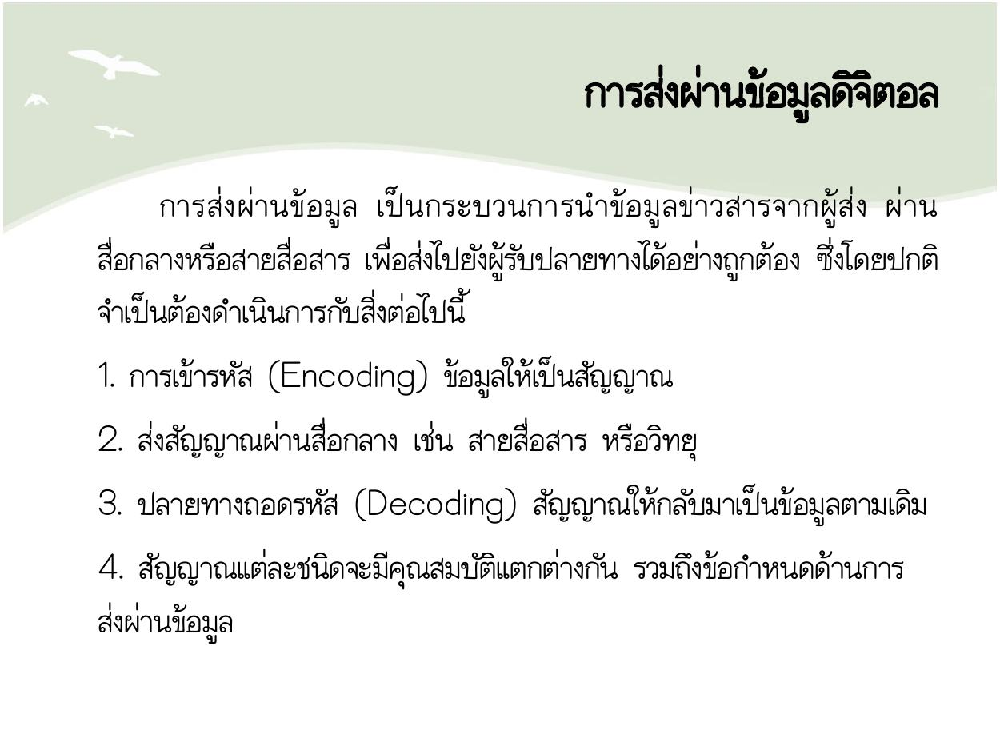
คลิกภาพเพื่อเปิดขยาย
อ่านข้อความต้นฉบับที่สกัดได้ (ไทย/อังกฤษตามไฟล์) การส่งผ่านข้อมูลดิจติ อล
การส่ ง ผ่ า นข้ อ มู ล เป็ น กระบวนการน าข้ อ มู ล ข่ า วสารจากผู้ ส่ ง ผ่ า น
สื่อกลางหรือสายสื่อสาร เพื่อส่งไปยังผู้รับปลายทางได้อย่างถูกต้อง ซึ่งโดยปกติ
จาเป็นต้องดาเนินการกับสิ่งต่อไปนี้
1. การเข้ารหัส (Encoding) ข้อมูลให้เป็นสัญญาณ
2. ส่งสัญญาณผ่านสื่อกลาง เช่น สายสื่อสาร หรือวิทยุ
3. ปลายทางถอดรหัส (Decoding) สัญญาณให้กลับมาเป็นข้อมูลตามเดิม
4. สัญญาณแต่ละชนิดจะมีคุณสมบัติแตกต่างกัน รวมถึงข้อกาหนดด้านการ
ส่งผ่านข้อมูล ทบทวนภาษาไทย: การส่งข้อมูลดิจิทัลและการแปลงสัญญาณ เสริม Network บท 5: Interface, RS-232, USB และ FireWire
กลับสารบัญ ↑ หน้า 3 — การส่งผ่านข้อมูลดิจติ อล ดูภาพต้นฉบับหน้า 3 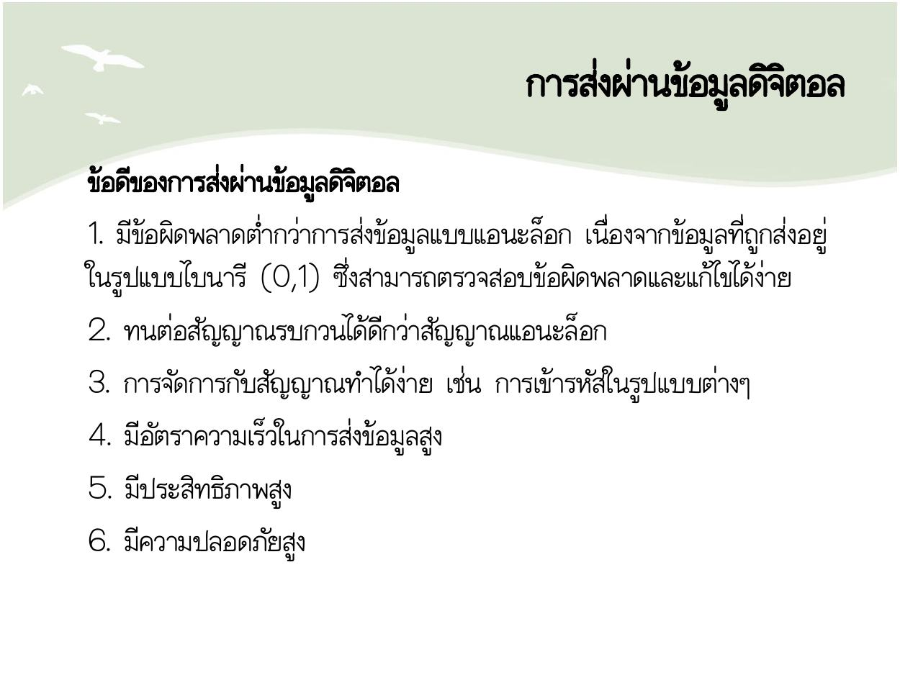
คลิกภาพเพื่อเปิดขยาย
อ่านข้อความต้นฉบับที่สกัดได้ (ไทย/อังกฤษตามไฟล์) การส่งผ่านข้อมูลดิจติ อล
ข้อดีของการส่งผ่านข้อมูลดิจติ อล
1. มีข้อผิดพลาดต่ากว่าการส่งข้อมูลแบบแอนะล็อก เนื่องจากข้อมูลที่ถูกส่งอยู่
ในรูปแบบไบนารี (0,1) ซึ่งสามารถตรวจสอบข้อผิดพลาดและแก้ไขได้ง่าย
2. ทนต่อสัญญาณรบกวนได้ดีกว่าสัญญาณแอนะล็อก
3. การจัดการกับสัญญาณทาได้ง่าย เช่น การเข้ารหัสในรูปแบบต่างๆ
4. มีอัตราความเร็วในการส่งข้อมูลสูง
5. มีประสิทธิภาพสูง
6. มีความปลอดภัยสูง ทบทวนภาษาไทย: การส่งข้อมูลดิจิทัลและการแปลงสัญญาณ เสริม Network บท 5: Interface, RS-232, USB และ FireWire
กลับสารบัญ ↑ หน้า 4 — การส่งผ่านข้อมูลดิจติ อล ดูภาพต้นฉบับหน้า 4 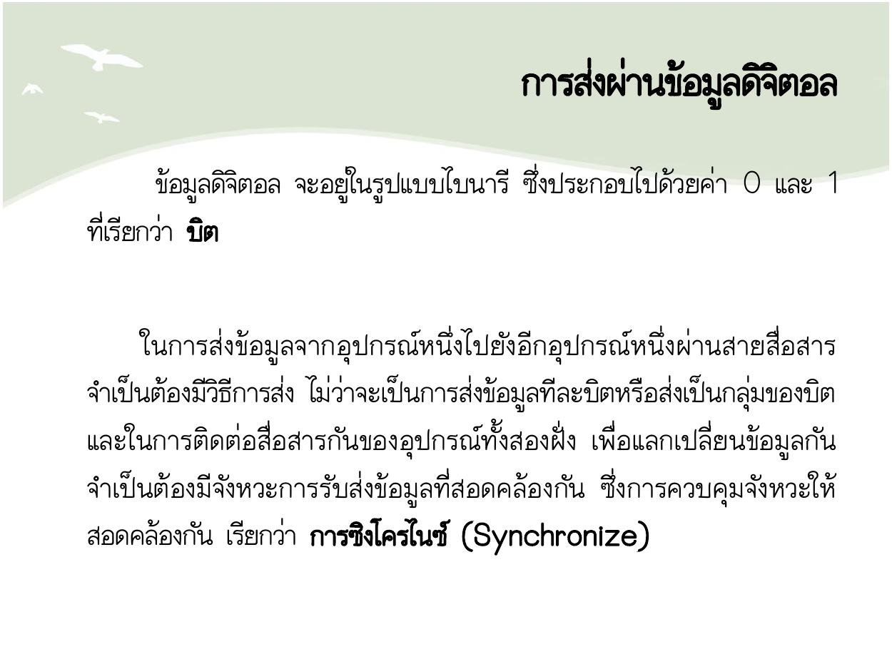
คลิกภาพเพื่อเปิดขยาย
อ่านข้อความต้นฉบับที่สกัดได้ (ไทย/อังกฤษตามไฟล์) การส่งผ่านข้อมูลดิจติ อล
ข้อมูลดิจิตอล จะอยู่ในรูปแบบไบนารี ซึ่งประกอบไปด้วยค่า 0 และ 1
ที่เรียกว่า บิต
ในการส่ง ข้อมูลจากอุปกรณ์ห นึ่ง ไปยัง อีกอุปกรณ์ห นึ่ง ผ่านสายสื่อสาร
จาเป็นต้องมีวิธีการส่ง ไม่ว่าจะเป็นการส่งข้อมูลทีละบิตหรือส่งเป็นกลุ่มของบิต
และในการติ ดต่อสื่อสารกันของอุปกรณ์ทั้งสองฝั่ ง เพื่อแลกเปลี่ยนข้อมูลกัน
จาเป็นต้ องมีจังหวะการรั บส่ง ข้อมูลที่สอดคล้องกัน ซึ่ง การควบคุมจังหวะให้
สอดคล้องกัน เรียกว่า การซิงโครไนซ์ (Synchronize) ทบทวนภาษาไทย: การส่งข้อมูลดิจิทัลและการแปลงสัญญาณ เสริม Network บท 5: Interface, RS-232, USB และ FireWire
กลับสารบัญ ↑ หน้า 5 — วิธกี ารส่งผ่านข้อมูลดิจติ อล ดูภาพต้นฉบับหน้า 5 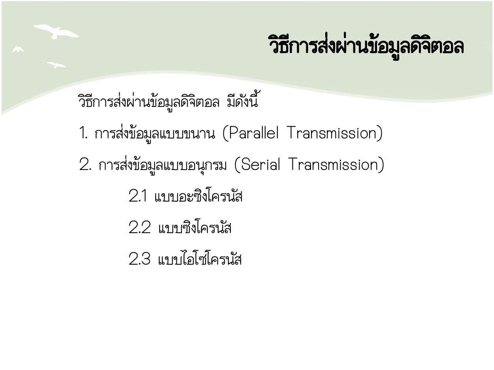
คลิกภาพเพื่อเปิดขยาย
อ่านข้อความต้นฉบับที่สกัดได้ (ไทย/อังกฤษตามไฟล์) วิธกี ารส่งผ่านข้อมูลดิจติ อล
วิธีการส่งผ่านข้อมูลดิจิตอล มีดังนี้
1. การส่งข้อมูลแบบขนาน (Parallel Transmission)
2. การส่งข้อมูลแบบอนุกรม (Serial Transmission)
2.1 แบบอะซิงโครนัส
2.2 แบบซิงโครนัส
2.3 แบบไอโซโครนัส ทบทวนภาษาไทย: การส่งข้อมูลดิจิทัลและการแปลงสัญญาณ เสริม Network บท 5: Interface, RS-232, USB และ FireWire
กลับสารบัญ ↑ หน้า 6 — การส่งข้อมูลแบบขนาน (Parallel Transmission) ดูภาพต้นฉบับหน้า 6 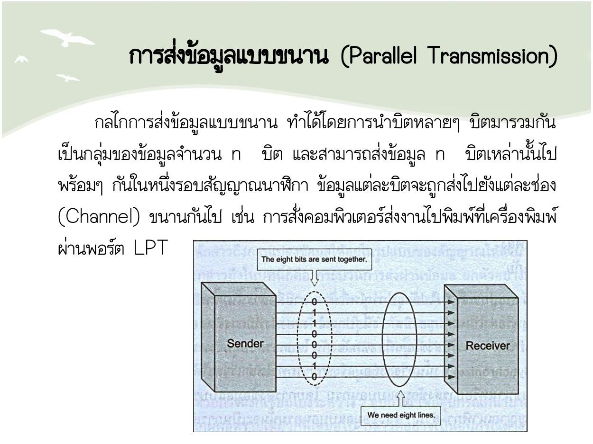
คลิกภาพเพื่อเปิดขยาย
อ่านข้อความต้นฉบับที่สกัดได้ (ไทย/อังกฤษตามไฟล์) การส่งข้อมูลแบบขนาน (Parallel Transmission)
กลไกการส่งข้อมูลแบบขนาน ทาได้โดยการนาบิตหลายๆ บิตมารวมกัน
เป็นกลุ่มของข้อมูลจานวน n บิต และสามารถส่งข้อมูล n บิตเหล่านั้นไป
พร้อมๆ กันในหนึ่งรอบสัญญาณนาฬิกา ข้อมูลแต่ละบิตจะถูกส่งไปยังแต่ละช่อง
(Channel) ขนานกันไป เช่น การสั่งคอมพิวเตอร์ส่งงานไปพิมพ์ที่เครื่องพิมพ์
ผ่านพอร์ต LPT ทบทวนภาษาไทย: การส่งข้อมูลดิจิทัลและการแปลงสัญญาณ เสริม Network บท 5: Interface, RS-232, USB และ FireWire
กลับสารบัญ ↑ หน้า 7 — การส่งข้อมูลแบบขนาน (Parallel Transmission) ดูภาพต้นฉบับหน้า 7 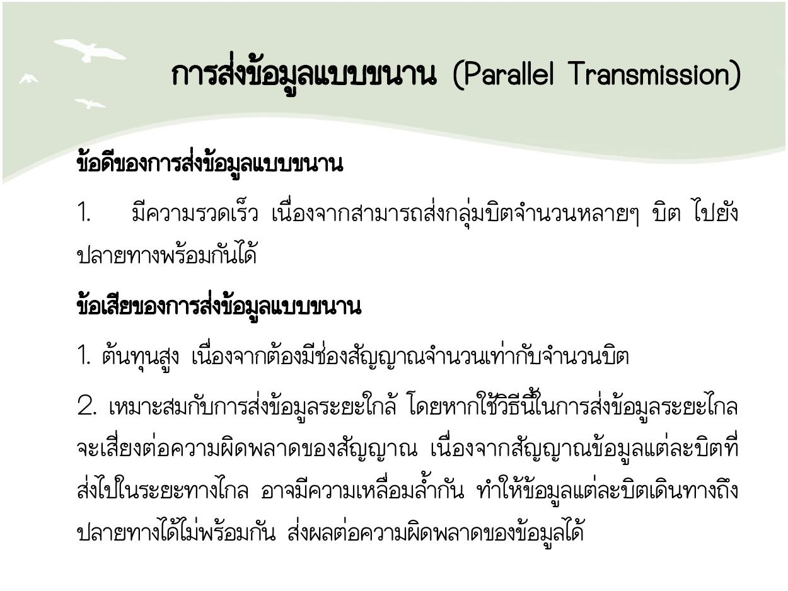
คลิกภาพเพื่อเปิดขยาย
อ่านข้อความต้นฉบับที่สกัดได้ (ไทย/อังกฤษตามไฟล์) การส่งข้อมูลแบบขนาน (Parallel Transmission)
ข้อดีของการส่งข้อมูลแบบขนาน
1. มีความรวดเร็ว เนื่องจากสามารถส่งกลุ่มบิตจานวนหลายๆ บิต ไปยัง
ปลายทางพร้อมกันได้
ข้อเสียของการส่งข้อมูลแบบขนาน
1. ต้นทุนสูง เนื่องจากต้องมีช่องสัญญาณจานวนเท่ากับจานวนบิต
2. เหมาะสมกับการส่งข้อมูลระยะใกล้ โดยหากใช้วิธีนี้ในการส่งข้อมูลระยะไกล
จะเสี่ยงต่อความผิดพลาดของสัญญาณ เนื่องจากสัญญาณข้อมูลแต่ละบิต ที่
ส่งไปในระยะทางไกล อาจมีความเหลื่อมล้ากัน ทาให้ข้อมูลแต่ละบิตเดินทางถึง
ปลายทางได้ไม่พร้อมกัน ส่งผลต่อความผิดพลาดของข้อมูลได้ ทบทวนภาษาไทย: การส่งข้อมูลดิจิทัลและการแปลงสัญญาณ เสริม Network บท 5: Interface, RS-232, USB และ FireWire
กลับสารบัญ ↑ หน้า 8 — การส่งข้อมูลแบบอนุกรม (Serial Transmission) ดูภาพต้นฉบับหน้า 8 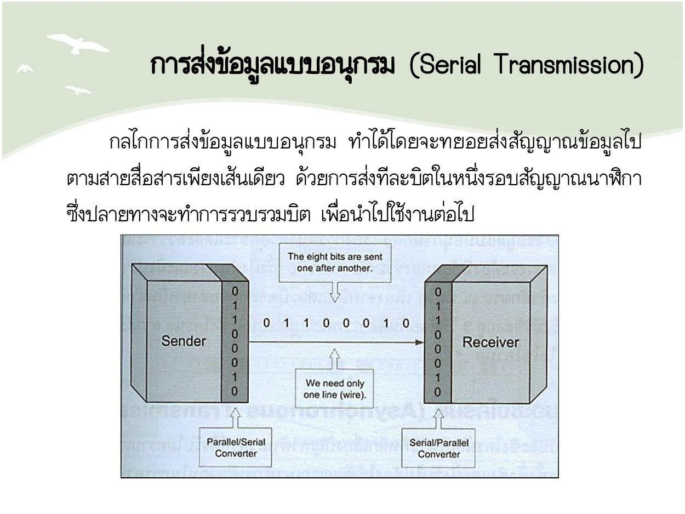
คลิกภาพเพื่อเปิดขยาย
อ่านข้อความต้นฉบับที่สกัดได้ (ไทย/อังกฤษตามไฟล์) การส่งข้อมูลแบบอนุกรม (Serial Transmission)
กลไกการส่งข้อมูลแบบอนุกรม ทาได้โดยจะทยอยส่งสัญญาณข้อมูลไป
ตามสายสื่อสารเพียงเส้นเดียว ด้วยการส่งทีละบิตในหนึ่งรอบสัญญาณนาฬิกา
ซึ่งปลายทางจะทาการรวบรวมบิต เพื่อนาไปใช้งานต่อไป ทบทวนภาษาไทย: การส่งข้อมูลดิจิทัลและการแปลงสัญญาณ เสริม Network บท 5: Interface, RS-232, USB และ FireWire
กลับสารบัญ ↑ หน้า 9 — การส่งข้อมูลแบบอนุกรม (Serial Transmission) ดูภาพต้นฉบับหน้า 9 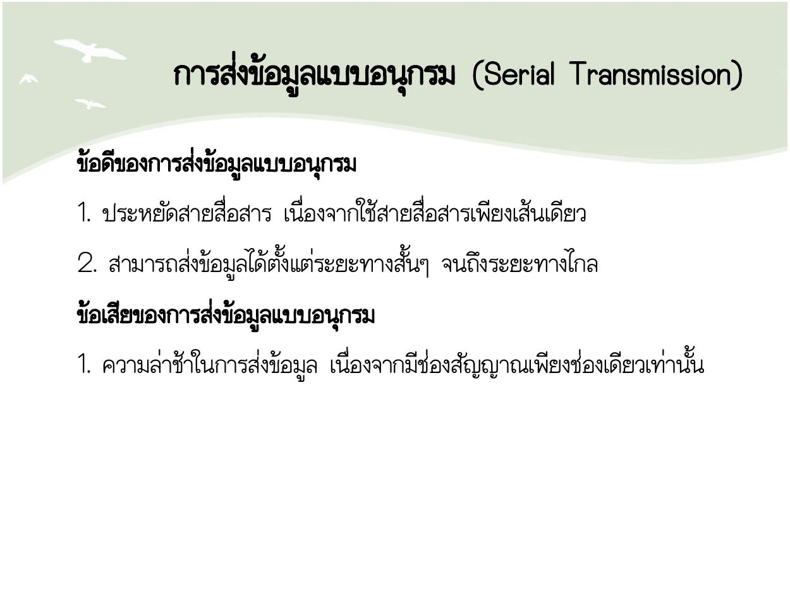
คลิกภาพเพื่อเปิดขยาย
อ่านข้อความต้นฉบับที่สกัดได้ (ไทย/อังกฤษตามไฟล์) การส่งข้อมูลแบบอนุกรม (Serial Transmission)
ข้อดีของการส่งข้อมูลแบบอนุกรม
1. ประหยัดสายสื่อสาร เนื่องจากใช้สายสื่อสารเพียงเส้นเดียว
2. สามารถส่งข้อมูลได้ตั้งแต่ระยะทางสั้นๆ จนถึงระยะทางไกล
ข้อเสียของการส่งข้อมูลแบบอนุกรม
1. ความล่าช้าในการส่งข้อมูล เนื่องจากมีช่องสัญญาณเพียงช่องเดียวเท่านั้น ทบทวนภาษาไทย: การส่งข้อมูลดิจิทัลและการแปลงสัญญาณ เสริม Network บท 5: Interface, RS-232, USB และ FireWire
กลับสารบัญ ↑ หน้า 10 — การส่งข้อมูลแบบอนุกรม (Serial Transmission) ดูภาพต้นฉบับหน้า 10 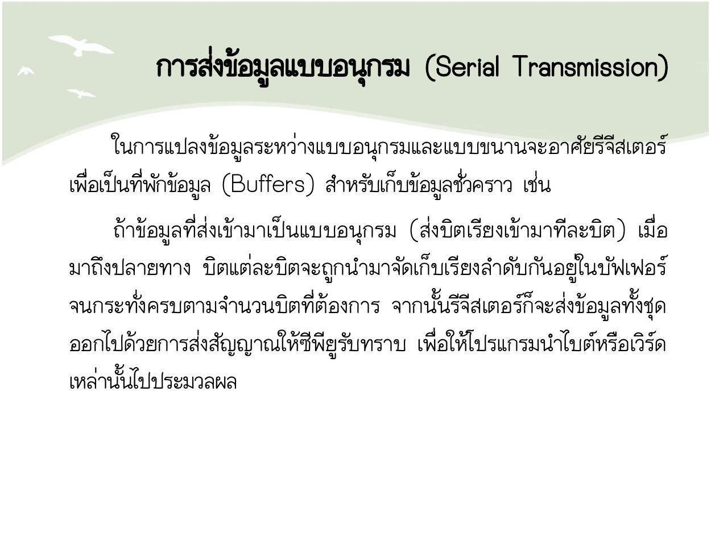
คลิกภาพเพื่อเปิดขยาย
อ่านข้อความต้นฉบับที่สกัดได้ (ไทย/อังกฤษตามไฟล์) การส่งข้อมูลแบบอนุกรม (Serial Transmission)
ในการแปลงข้อมูลระหว่างแบบอนุกรมและแบบขนานจะอาศัยรีจีสเตอร์
เพื่อเป็นที่พักข้อมูล (Buffers) สาหรับเก็บข้อมูลชั่วคราว เช่น
ถ้าข้อมูลที่ส่งเข้ามาเป็นแบบอนุกรม (ส่ง บิต เรียงเข้ามาทีละบิ ต ) เมื่อ
มาถึงปลายทาง บิตแต่ละบิตจะถูกนามาจัดเก็บเรียงลาดับกันอยู่ในบัฟเฟอร์
จนกระทั่งครบตามจานวนบิตที่ต้องการ จากนั้นรีจีสเตอร์ก็จะส่งข้อมูลทั้งชุด
ออกไปด้วยการส่งสัญญาณให้ซีพียูรับทราบ เพื่อให้โปรแกรมนาไบต์หรือเวิร์ด
เหล่านั้นไปประมวลผล ทบทวนภาษาไทย: การส่งข้อมูลดิจิทัลและการแปลงสัญญาณ เสริม Network บท 5: Interface, RS-232, USB และ FireWire
กลับสารบัญ ↑ หน้า 11 — การส่งข้อมูลแบบอนุกรม (Serial Transmission) ดูภาพต้นฉบับหน้า 11 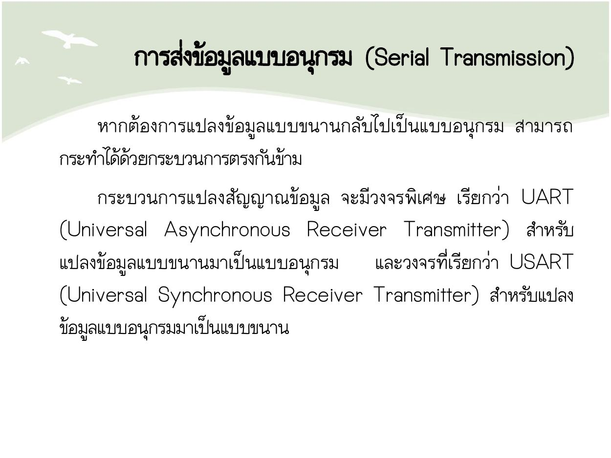
คลิกภาพเพื่อเปิดขยาย
อ่านข้อความต้นฉบับที่สกัดได้ (ไทย/อังกฤษตามไฟล์) การส่งข้อมูลแบบอนุกรม (Serial Transmission)
หากต้ อ งการแปลงข้ อมูลแบบขนานกลับ ไปเป็นแบบอนุ กรม สามารถ
กระทาได้ด้วยกระบวนการตรงกันข้าม
กระบวนการแปลงสัญญาณข้อ มูล จะมี ว งจรพิเศษ เรียกว่า UART
(Universal Asynchronous Receiver Transmitter) สาหรับ
แปลงข้อมูลแบบขนานมาเป็นแบบอนุกรม และวงจรที่เรียกว่า USART
(Universal Synchronous Receiver Transmitter) สาหรับแปลง
ข้อมูลแบบอนุกรมมาเป็นแบบขนาน ทบทวนภาษาไทย: การส่งข้อมูลดิจิทัลและการแปลงสัญญาณ เสริม Network บท 5: Interface, RS-232, USB และ FireWire
กลับสารบัญ ↑ หน้า 12 — การแปลงข้อมูลระหว่างแบบอนุกรมและแบบขนาน ดูภาพต้นฉบับหน้า 12 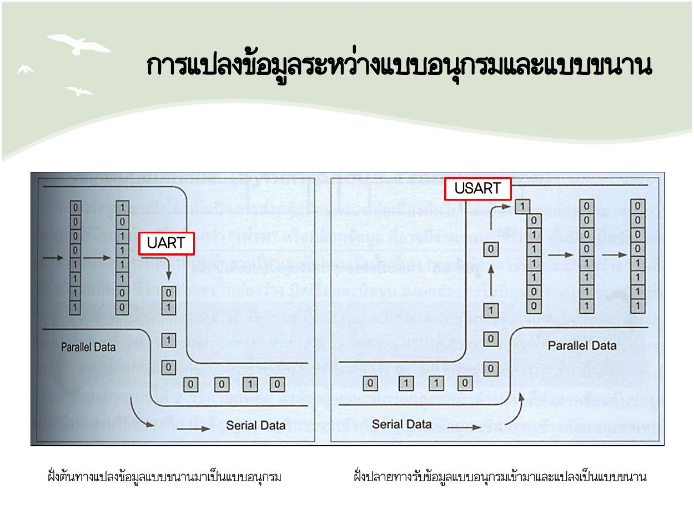
คลิกภาพเพื่อเปิดขยาย
อ่านข้อความต้นฉบับที่สกัดได้ (ไทย/อังกฤษตามไฟล์) การแปลงข้อมูลระหว่างแบบอนุกรมและแบบขนาน
USART
UART
ฝั่งต้นทางแปลงข้อมูลแบบขนานมาเป็นแบบอนุกรม ฝั่งปลายทางรับข้อมูลแบบอนุกรมเข้ามาและแปลงเป็นแบบขนาน ทบทวนภาษาไทย: การส่งข้อมูลดิจิทัลและการแปลงสัญญาณ เสริม Network บท 5: Interface, RS-232, USB และ FireWire
กลับสารบัญ ↑ หน้า 13 — การส่งข้อมูลแบบอนุกรม (Serial Transmission) ดูภาพต้นฉบับหน้า 13 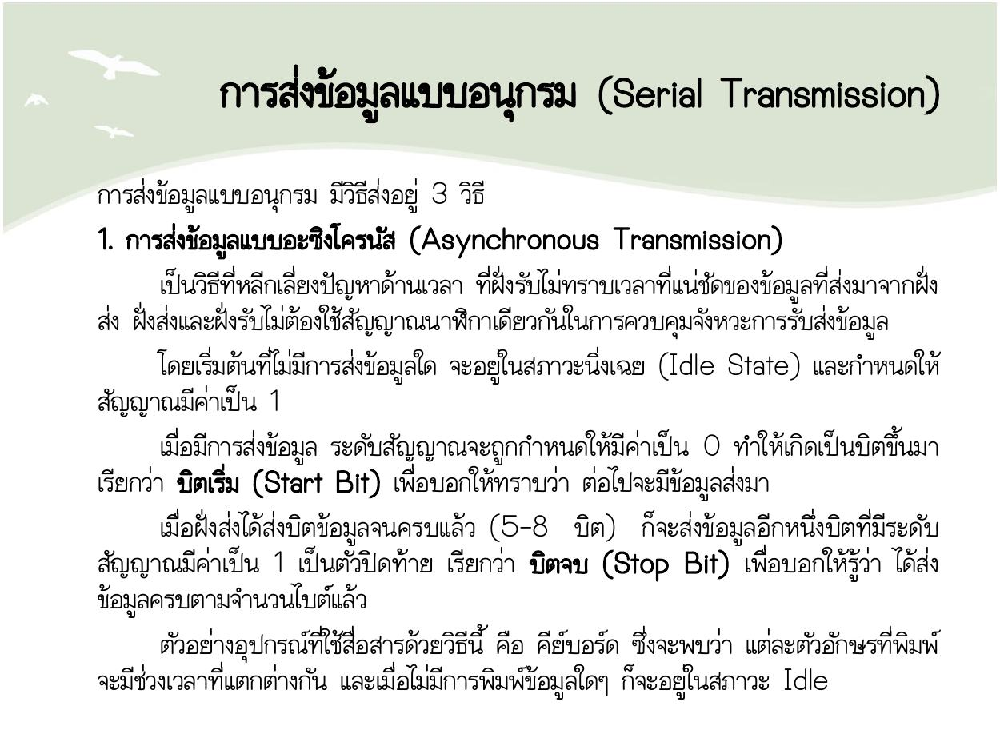
คลิกภาพเพื่อเปิดขยาย
อ่านข้อความต้นฉบับที่สกัดได้ (ไทย/อังกฤษตามไฟล์) การส่งข้อมูลแบบอนุกรม (Serial Transmission)
การส่งข้อมูลแบบอนุกรม มีวิธีส่งอยู่ 3 วิธี
1. การส่งข้อมูลแบบอะซิงโครนัส (Asynchronous Transmission)
เป็นวิธีที่หลีกเลี่ยงปัญหาด้านเวลา ที่ฝั่งรับไม่ทราบเวลาที่แน่ชัดของข้อมูลที่ส่งมาจากฝั่ง
ส่ง ฝั่งส่งและฝั่งรับไม่ต้องใช้สัญญาณนาฬิกาเดียวกันในการควบคุมจังหวะการรับส่งข้อมูล
โดยเริ่มต้นที่ไม่มีการส่งข้อมูลใด จะอยู่ในสภาวะนิ่งเฉย (Idle State) และกาหนดให้
สัญญาณมีค่าเป็น 1
เมื่อมีการส่งข้อมูล ระดับสัญญาณจะถูกกาหนดให้มีค่าเป็น 0 ทาให้เกิดเป็นบิตขึ้นมา
เรียกว่า บิตเริ่ม (Start Bit) เพื่อบอกให้ทราบว่า ต่อไปจะมีข้อมูลส่งมา
เมื่อฝั่งส่งได้ส่งบิตข้อมูลจนครบแล้ว (5-8 บิต) ก็จะส่งข้อมูลอีกหนึ่งบิตที่มีระดับ
สัญญาณมีค่าเป็น 1 เป็นตัวปิดท้าย เรียกว่า บิตจบ (Stop Bit) เพื่อบอกให้รู้ว่า ได้ส่ง
ข้อมูลครบตามจานวนไบต์แล้ว
ตัวอย่างอุปกรณ์ที่ใช้สื่อสารด้วยวิธีนี้ คือ คีย์บอร์ด ซึ่งจะพบว่า แต่ละตัวอักษรที่พิมพ์
จะมีช่วงเวลาที่แตกต่างกัน และเมื่อไม่มีการพิมพ์ข้อมูลใดๆ ก็จะอยู่ในสภาวะ Idle ทบทวนภาษาไทย: การส่งข้อมูลดิจิทัลและการแปลงสัญญาณ เสริม Network บท 5: Interface, RS-232, USB และ FireWire
กลับสารบัญ ↑ หน้า 14 — การส่งข้อมูลแบบอนุกรม ดูภาพต้นฉบับหน้า 14 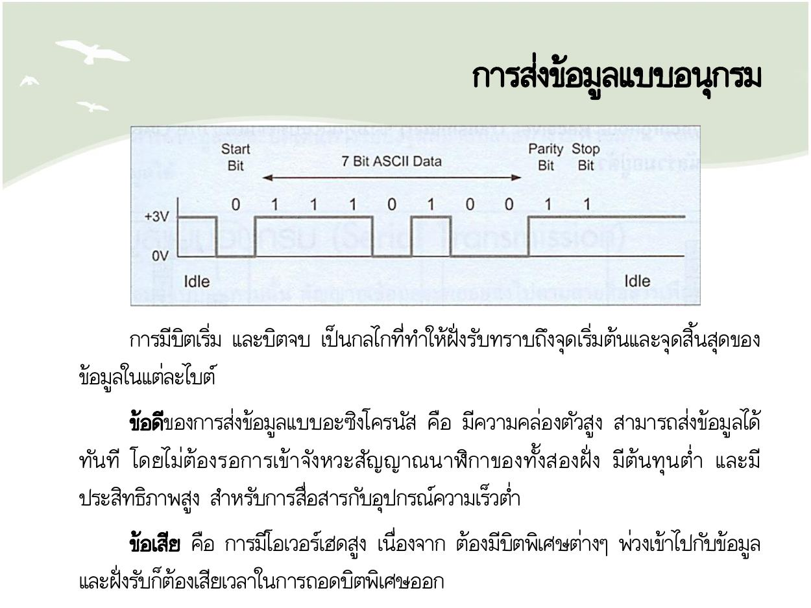
คลิกภาพเพื่อเปิดขยาย
อ่านข้อความต้นฉบับที่สกัดได้ (ไทย/อังกฤษตามไฟล์) การส่งข้อมูลแบบอนุกรม
การมีบิตเริ่ม และบิตจบ เป็นกลไกที่ทาให้ฝั่งรับทราบถึงจุดเริ่มต้นและจุดสิ้นสุดของ
ข้อมูลในแต่ละไบต์
ข้อดีของการส่งข้อมูลแบบอะซิงโครนัส คือ มีความคล่องตัวสูง สามารถส่งข้อมูลได้
ทันที โดยไม่ต้อ งรอการเข้ าจั งหวะสั ญญาณนาฬิกาของทั้ งสองฝั่ง มี ต้นทุ นต่ า และมี
ประสิทธิภาพสูง สาหรับการสื่อสารกับอุปกรณ์ความเร็วต่า
ข้อเสีย คือ การมีโอเวอร์เฮดสูง เนื่องจาก ต้องมีบิตพิเศษต่างๆ พ่วงเข้าไปกับข้อมูล
และฝั่งรับก็ต้องเสียเวลาในการถอดบิตพิเศษออก ทบทวนภาษาไทย: การส่งข้อมูลดิจิทัลและการแปลงสัญญาณ เสริม Network บท 5: Interface, RS-232, USB และ FireWire
กลับสารบัญ ↑ หน้า 15 — การส่งข้อมูลแบบอนุกรม ดูภาพต้นฉบับหน้า 15 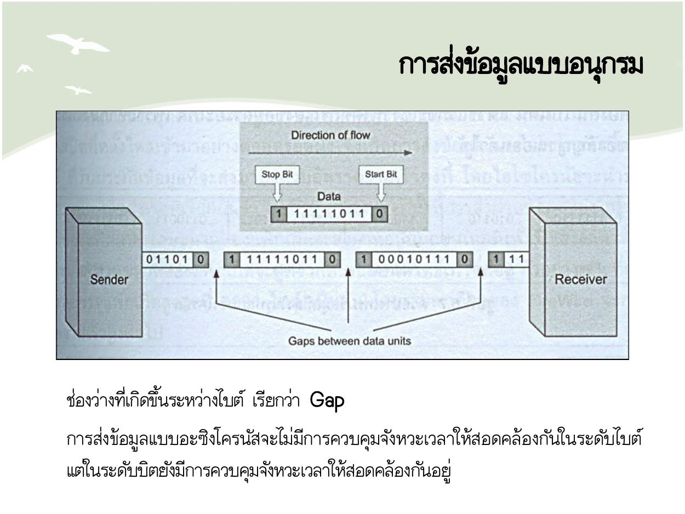
คลิกภาพเพื่อเปิดขยาย
อ่านข้อความต้นฉบับที่สกัดได้ (ไทย/อังกฤษตามไฟล์) การส่งข้อมูลแบบอนุกรม
ช่องว่างที่เกิดขึ้นระหว่างไบต์ เรียกว่า Gap
การส่งข้อมูลแบบอะซิงโครนัสจะไม่มีการควบคุมจังหวะเวลาให้สอดคล้องกันในระดับไบต์
แต่ในระดับบิตยังมีการควบคุมจังหวะเวลาให้สอดคล้องกันอยู่ ทบทวนภาษาไทย: การส่งข้อมูลดิจิทัลและการแปลงสัญญาณ เสริม Network บท 5: Interface, RS-232, USB และ FireWire
กลับสารบัญ ↑ หน้า 16 — การส่งข้อมูลแบบอนุกรม ดูภาพต้นฉบับหน้า 16 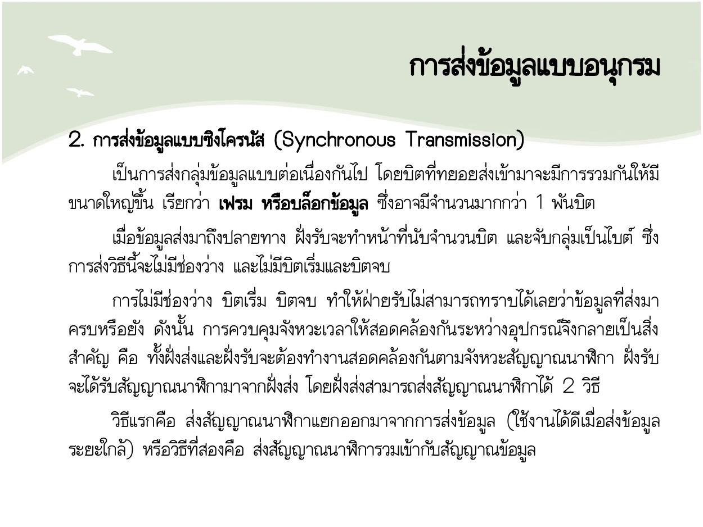
คลิกภาพเพื่อเปิดขยาย
อ่านข้อความต้นฉบับที่สกัดได้ (ไทย/อังกฤษตามไฟล์) การส่งข้อมูลแบบอนุกรม
2. การส่งข้อมูลแบบซิงโครนัส (Synchronous Transmission)
เป็นการส่งกลุ่มข้อมูลแบบต่อเนื่องกันไป โดยบิตที่ทยอยส่งเข้ามาจะมีการรวมกันให้มี
ขนาดใหญ่ขึ้น เรียกว่า เฟรม หรือบล็อกข้อมูล ซึ่งอาจมีจานวนมากกว่า 1 พันบิต
เมื่อข้อมูลส่งมาถึงปลายทาง ฝั่งรับจะทาหน้าที่นับจานวนบิต และจับกลุ่มเป็นไบต์ ซึ่ง
การส่งวิธีนี้จะไม่มีช่องว่าง และไม่มีบิตเริ่มและบิตจบ
การไม่มีช่องว่าง บิตเรี่ม บิตจบ ทาให้ฝ่ายรับไม่สามารถทราบได้เลยว่าข้อมูลที่ส่งมา
ครบหรือยัง ดังนั้น การควบคุมจังหวะเวลาให้สอดคล้องกันระหว่างอุปกรณ์จึงกลายเป็นสิ่ง
สาคัญ คือ ทั้งฝั่งส่งและฝั่งรับจะต้องทางานสอดคล้องกันตามจังหวะสัญญาณนาฬิกา ฝั่งรับ
จะได้รับสัญญาณนาฬิกามาจากฝั่งส่ง โดยฝั่งส่งสามารถส่งสัญญาณนาฬิกาได้ 2 วิธี
วิธีแรกคือ ส่งสัญญาณนาฬิกาแยกออกมาจากการส่งข้อมูล (ใช้งานได้ดีเมื่อส่งข้อมูล
ระยะใกล้) หรือวิธีที่สองคือ ส่งสัญญาณนาฬิการวมเข้ากับสัญญาณข้อมูล ทบทวนภาษาไทย: การส่งข้อมูลดิจิทัลและการแปลงสัญญาณ เสริม Network บท 5: Interface, RS-232, USB และ FireWire
กลับสารบัญ ↑ หน้า 17 — การส่งข้อมูลแบบอนุกรม ดูภาพต้นฉบับหน้า 17 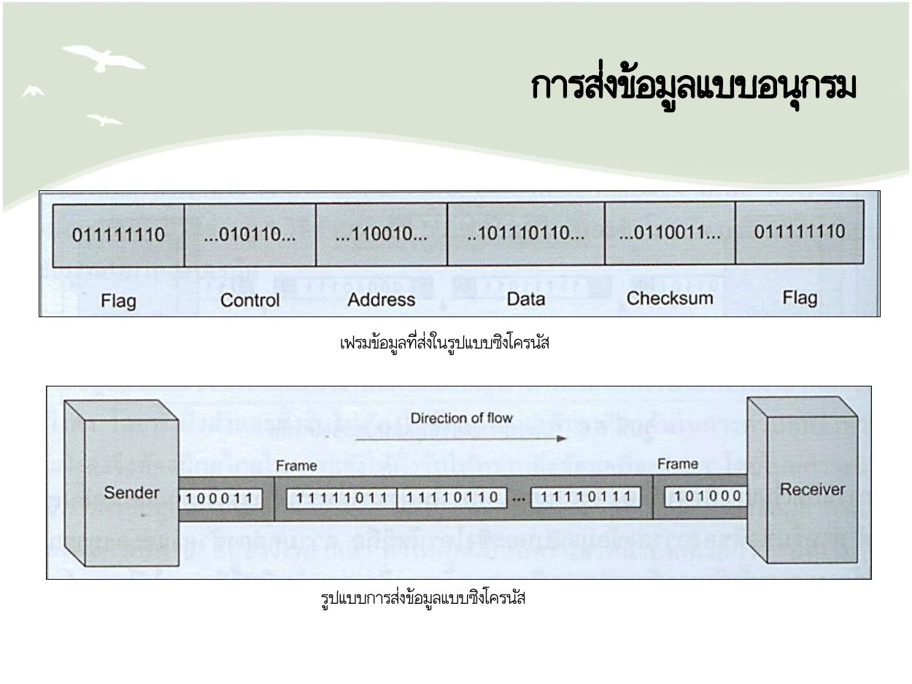
คลิกภาพเพื่อเปิดขยาย
อ่านข้อความต้นฉบับที่สกัดได้ (ไทย/อังกฤษตามไฟล์) การส่งข้อมูลแบบอนุกรม
เฟรมข้อมูลที่ส่งในรูปแบบซิงโครนัส
รูปแบบการส่งข้อมูลแบบซิงโครนัส ทบทวนภาษาไทย: การส่งข้อมูลดิจิทัลและการแปลงสัญญาณ เสริม Network บท 5: Interface, RS-232, USB และ FireWire
กลับสารบัญ ↑ หน้า 18 — การส่งข้อมูลแบบอนุกรม ดูภาพต้นฉบับหน้า 18 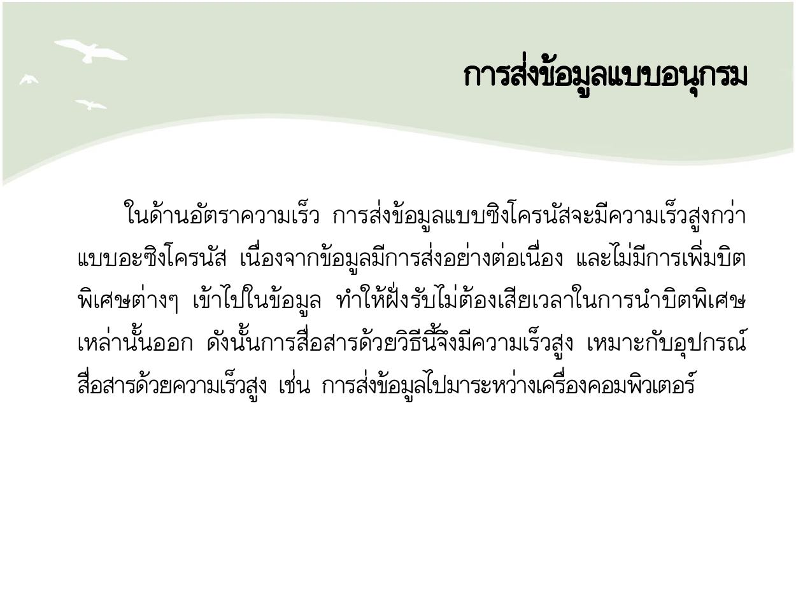
คลิกภาพเพื่อเปิดขยาย
อ่านข้อความต้นฉบับที่สกัดได้ (ไทย/อังกฤษตามไฟล์) การส่งข้อมูลแบบอนุกรม
ในด้านอัตราความเร็ว การส่งข้อมูลแบบซิงโครนัสจะมีความเร็วสูงกว่า
แบบอะซิงโครนัส เนื่องจากข้อมูลมีการส่งอย่างต่อเนื่อง และไม่มีการเพิ่มบิต
พิเศษต่ างๆ เข้าไปในข้อ มูล ทาให้ฝั่ ง รั บ ไม่ ต้ องเสี ยเวลาในการนาบิ ต พิเศษ
เหล่านั้นออก ดังนั้นการสื่อสารด้วยวิ ธีนี้จึงมีความเร็วสูง เหมาะกับอุปกรณ์
สื่อสารด้วยความเร็วสูง เช่น การส่งข้อมูลไปมาระหว่างเครื่องคอมพิวเตอร์ ทบทวนภาษาไทย: การส่งข้อมูลดิจิทัลและการแปลงสัญญาณ เสริม Network บท 5: Interface, RS-232, USB และ FireWire
กลับสารบัญ ↑ หน้า 19 — การส่งข้อมูลแบบอนุกรม ดูภาพต้นฉบับหน้า 19 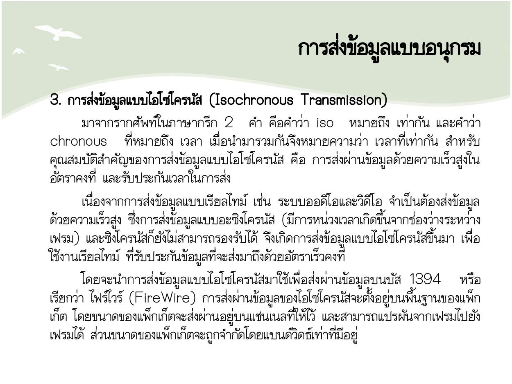
คลิกภาพเพื่อเปิดขยาย
อ่านข้อความต้นฉบับที่สกัดได้ (ไทย/อังกฤษตามไฟล์) การส่งข้อมูลแบบอนุกรม
3. การส่งข้อมูลแบบไอโซโครนัส (Isochronous Transmission)
มาจากรากศัพท์ในภาษากรีก 2 คา คือคาว่า iso หมายถึง เท่ากัน และคาว่า
chronous ที่หมายถึง เวลา เมื่อนามารวมกันจึงหมายความว่า เวลาที่เท่ากัน สาหรับ
คุณสมบัติสาคัญของการส่งข้อมูลแบบไอโซโครนัส คือ การส่งผ่านข้อมูลด้วยความเร็วสูงใน
อัตราคงที่ และรับประกันเวลาในการส่ง
เนื่องจากการส่งข้อมูลแบบเรียลไทม์ เช่น ระบบออดิโอและวิดีโอ จาเป็นต้องส่งข้อมูล
ด้วยความเร็วสูง ซึ่งการส่งข้อมูลแบบอะซิงโครนัส (มีการหน่วงเวลาเกิดขึ้นจากช่องว่างระหว่าง
เฟรม) และซิงโครนัสก็ยังไม่สามารถรองรับได้ จึงเกิดการส่งข้อมูลแบบไอโซโครนัสขึ้นมา เพื่อ
ใช้งานเรียลไทม์ ที่รับประกันข้อมูลที่จะส่งมาถึงด้วยอัตราเร็วคงที่
โดยจะนาการส่งข้อมูลแบบไอโซโครนัสมาใช้เพื่อส่งผ่านข้อมูลบนบัส 1394 หรือ
เรียกว่า ไฟร์ไวร์ (FireWire) การส่งผ่านข้อมูลของไอโซโครนัสจะตั้งอยู่บนพื้นฐานของแพ็ก
เก็ต โดยขนาดของแพ็กเก็ตจะส่งผ่านอยู่บนแชนเนลที่ให้ไว้ และสามารถแปรผันจากเฟรมไปยัง
เฟรมได้ ส่วนขนาดของแพ็กเก็ตจะถูกจากัดโดยแบนด์วิดธ์เท่าที่มีอยู่ ทบทวนภาษาไทย: การส่งข้อมูลดิจิทัลและการแปลงสัญญาณ เสริม Network บท 5: Interface, RS-232, USB และ FireWire
กลับสารบัญ ↑ หน้า 20 — ทิศทางการส่งข้อมูล (Transmission Mode) ดูภาพต้นฉบับหน้า 20 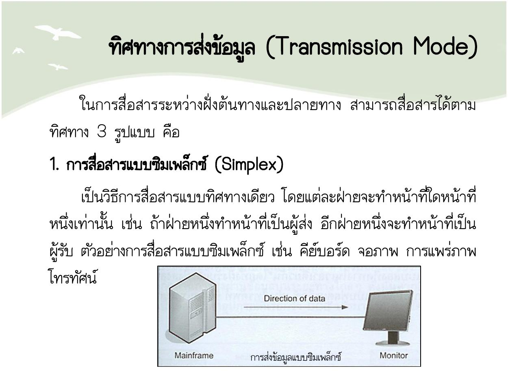
คลิกภาพเพื่อเปิดขยาย
อ่านข้อความต้นฉบับที่สกัดได้ (ไทย/อังกฤษตามไฟล์) ทิศทางการส่งข้อมูล (Transmission Mode)
ในการสื่อสารระหว่ างฝั่ งต้นทางและปลายทาง สามารถสื่อสารได้ตาม
ทิศทาง 3 รูปแบบ คือ
1. การสื่อสารแบบซิมเพล็กซ์ (Simplex)
เป็นวิธีการสื่อสารแบบทิศทางเดียว โดยแต่ละฝ่ายจะทาหน้าที่ใดหน้าที่
หนึ่งเท่านั้น เช่น ถ้าฝ่ายหนึ่งทาหน้าที่เป็นผู้ส่ง อีกฝ่ายหนึ่งจะทาหน้าที่เป็น
ผู้รับ ตัวอย่างการสื่อสารแบบซิมเพล็กซ์ เช่น คีย์บอร์ด จอภาพ การแพร่ภาพ
โทรทัศน์
การส่งข้อมูลแบบซิมเพล็กซ์ ทบทวนภาษาไทย: การส่งข้อมูลดิจิทัลและการแปลงสัญญาณ เสริม Network บท 5: Interface, RS-232, USB และ FireWire
กลับสารบัญ ↑ หน้า 21 — ทิศทางการส่งข้อมูล (Transmission Mode) ดูภาพต้นฉบับหน้า 21 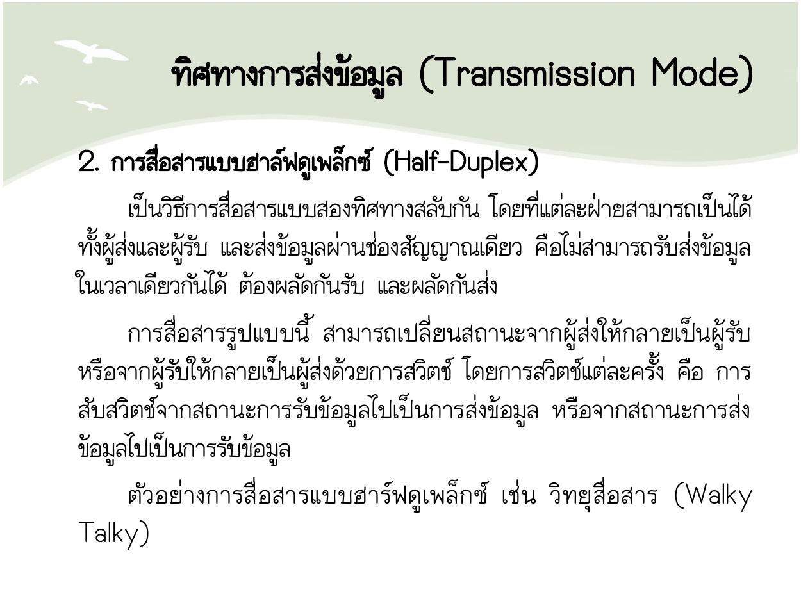
คลิกภาพเพื่อเปิดขยาย
อ่านข้อความต้นฉบับที่สกัดได้ (ไทย/อังกฤษตามไฟล์) ทิศทางการส่งข้อมูล (Transmission Mode)
2. การสื่อสารแบบฮาล์ฟดูเพล็กซ์ (Half-Duplex)
เป็นวิธีการสื่อสารแบบสองทิศทางสลับกัน โดยที่แต่ละฝ่ายสามารถเป็นได้
ทั้งผู้ส่งและผู้รับ และส่งข้อมูลผ่านช่องสัญญาณเดียว คือไม่สามารถรับส่งข้อมูล
ในเวลาเดียวกันได้ ต้องผลัดกันรับ และผลัดกันส่ง
การสื่อสารรูปแบบนี้ สามารถเปลี่ยนสถานะจากผู้ส่งให้กลายเป็นผู้รับ
หรือจากผู้รับให้กลายเป็นผู้ส่งด้วยการสวิตช์ โดยการสวิตช์แต่ละครั้ง คือ การ
สับสวิตช์จากสถานะการรับข้อมูลไปเป็นการส่งข้อมูล หรือจากสถานะการส่ง
ข้อมูลไปเป็นการรับข้อมูล
ตั ว อย่ า งการสื่ อ สารแบบฮาร์ ฟ ดู เ พล็ ก ซ์ เช่ น วิ ท ยุ สื่ อ สาร (Walky
Talky) ทบทวนภาษาไทย: การส่งข้อมูลดิจิทัลและการแปลงสัญญาณ เสริม Network บท 5: Interface, RS-232, USB และ FireWire
กลับสารบัญ ↑ หน้า 22 — ทิศทางการส่งข้อมูล (Transmission Mode) ดูภาพต้นฉบับหน้า 22 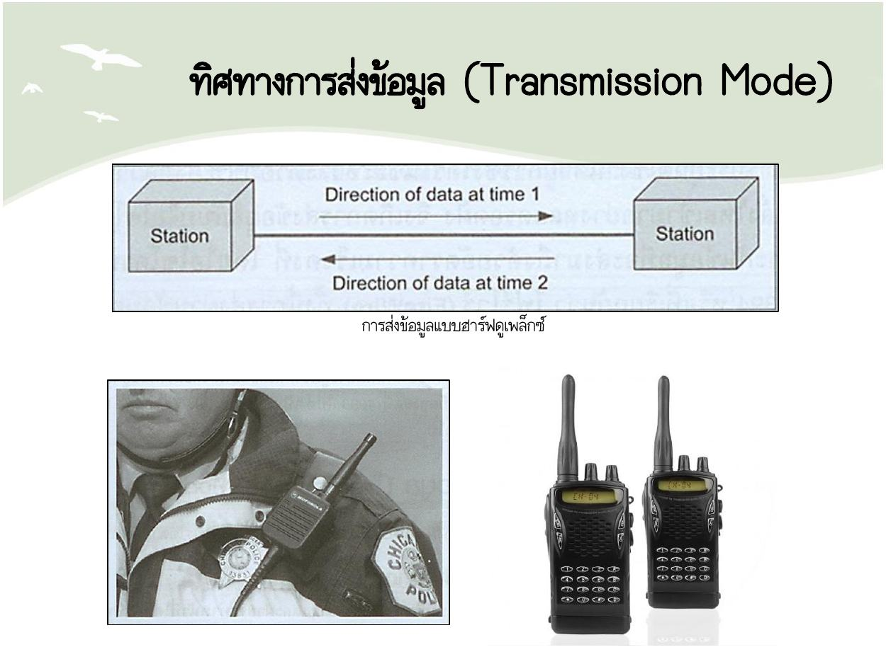
คลิกภาพเพื่อเปิดขยาย
อ่านข้อความต้นฉบับที่สกัดได้ (ไทย/อังกฤษตามไฟล์) ทิศทางการส่งข้อมูล (Transmission Mode)
การส่งข้อมูลแบบฮาร์ฟดูเพล็กซ์ ทบทวนภาษาไทย: การส่งข้อมูลดิจิทัลและการแปลงสัญญาณ เสริม Network บท 5: Interface, RS-232, USB และ FireWire
กลับสารบัญ ↑ หน้า 23 — ทิศทางการส่งข้อมูล (Transmission Mode) ดูภาพต้นฉบับหน้า 23 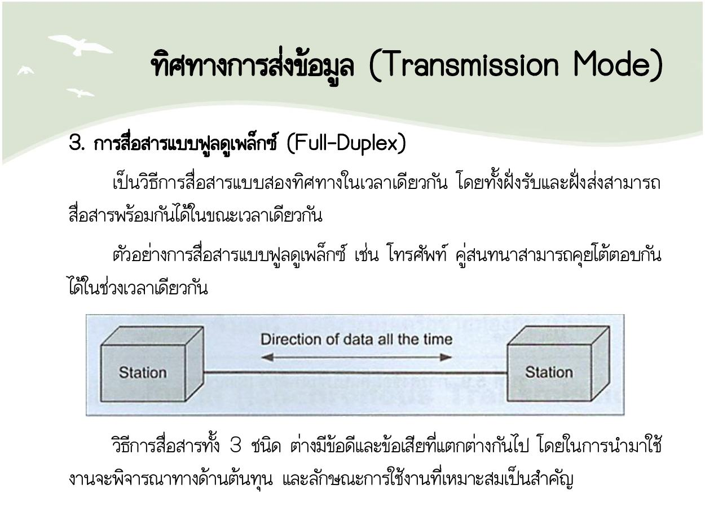
คลิกภาพเพื่อเปิดขยาย
อ่านข้อความต้นฉบับที่สกัดได้ (ไทย/อังกฤษตามไฟล์) ทิศทางการส่งข้อมูล (Transmission Mode)
3. การสื่อสารแบบฟูลดูเพล็กซ์ (Full-Duplex)
เป็นวิธีการสื่อสารแบบสองทิศทางในเวลาเดียวกัน โดยทั้งฝั่งรับและฝั่งส่งสามารถ
สื่อสารพร้อมกันได้ในขณะเวลาเดียวกัน
ตัวอย่างการสื่อสารแบบฟูลดูเพล็กซ์ เช่น โทรศัพท์ คู่สนทนาสามารถคุยโต้ตอบกัน
ได้ในช่วงเวลาเดียวกัน
วิธีการสื่อสารทั้ง 3 ชนิด ต่างมีข้อดีและข้อเสียที่แตกต่างกันไป โดยในการนามาใช้
งานจะพิจารณาทางด้านต้นทุน และลักษณะการใช้งานที่เหมาะสมเป็นสาคัญ ทบทวนภาษาไทย: การส่งข้อมูลดิจิทัลและการแปลงสัญญาณ เสริม Network บท 5: Interface, RS-232, USB และ FireWire
กลับสารบัญ ↑ หน้า 24 — การอินเตอร์เฟซ ดูภาพต้นฉบับหน้า 24 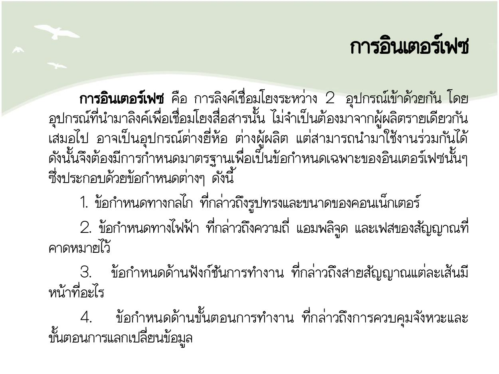
คลิกภาพเพื่อเปิดขยาย
อ่านข้อความต้นฉบับที่สกัดได้ (ไทย/อังกฤษตามไฟล์) การอินเตอร์เฟซ
การอินเตอร์เฟซ คือ การลิงค์เชื่อมโยงระหว่าง 2 อุปกรณ์เข้าด้วยกัน โดย
อุปกรณ์ที่นามาลิงค์เพื่อเชื่อมโยงสื่อสารนั้น ไม่จาเป็นต้องมาจากผู้ผลิตรายเดียวกัน
เสมอไป อาจเป็นอุปกรณ์ต่างยี่ห้อ ต่างผู้ผลิต แต่สามารถนามาใช้งานร่วมกันได้
ดังนั้นจึงต้องมีการกาหนดมาตรฐานเพื่อเป็นข้อกาหนดเฉพาะของอินเตอร์เฟซนั้นๆ
ซึ่งประกอบด้วยข้อกาหนดต่างๆ ดังนี้
1. ข้อกาหนดทางกลไก ที่กล่าวถึงรูปทรงและขนาดของคอนเน็กเตอร์
2. ข้อกาหนดทางไฟฟ้า ที่กล่าวถึงความถี่ แอมพลิจูด และเฟสของสัญญาณที่
คาดหมายไว้
3. ข้อกาหนดด้านฟังก์ชันการทางาน ที่กล่าวถึงสายสัญญาณแต่ละเส้นมี
หน้าที่อะไร
4. ข้อกาหนดด้านขั้นตอนการทางาน ที่กล่าวถึงการควบคุมจังหวะและ
ขั้นตอนการแลกเปลี่ยนข้อมูล ทบทวนภาษาไทย: การส่งข้อมูลดิจิทัลและการแปลงสัญญาณ เสริม Network บท 5: Interface, RS-232, USB และ FireWire
กลับสารบัญ ↑ หน้า 25 — DTE – DCE อินเตอร์เฟส ดูภาพต้นฉบับหน้า 25 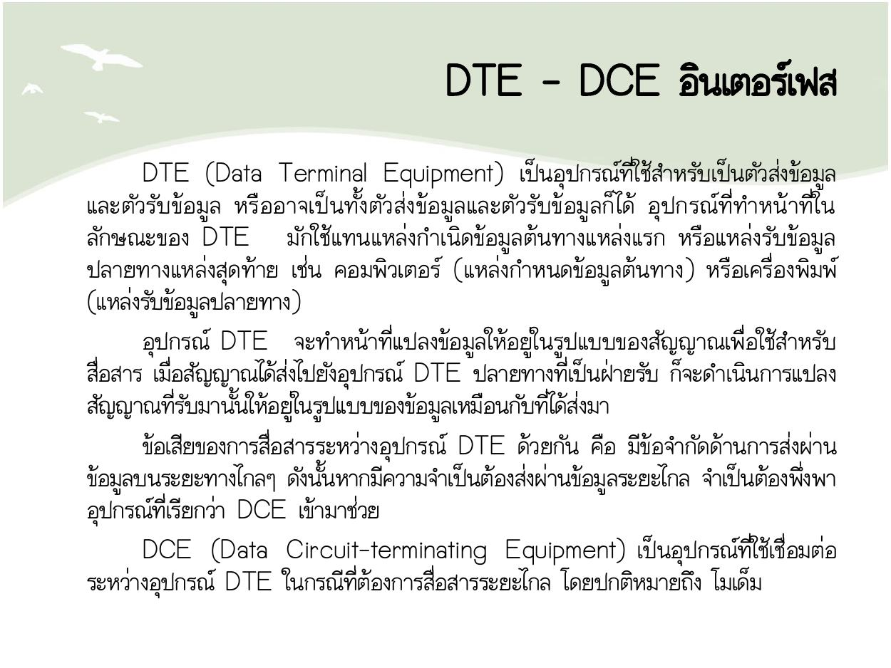
คลิกภาพเพื่อเปิดขยาย
อ่านข้อความต้นฉบับที่สกัดได้ (ไทย/อังกฤษตามไฟล์) DTE – DCE อินเตอร์เฟส
DTE (Data Terminal Equipment) เป็นอุปกรณ์ที่ใช้สาหรับเป็นตัวส่งข้อมูล
และตัวรั บข้อ มูล หรื ออาจเป็นทั้ งตัว ส่ง ข้อมู ลและตั วรับ ข้อมู ลก็ ได้ อุปกรณ์ ที่ทาหน้า ที่ใ น
ลักษณะของ DTE มักใช้แทนแหล่งกาเนิดข้อมูลต้นทางแหล่งแรก หรือแหล่งรับข้อมูล
ปลายทางแหล่งสุดท้าย เช่น คอมพิวเตอร์ (แหล่งกาหนดข้อมูลต้นทาง) หรือเครื่องพิมพ์
(แหล่งรับข้อมูลปลายทาง)
อุปกรณ์ DTE จะทาหน้าที่แปลงข้อมูลให้อยู่ในรูปแบบของสัญญาณเพื่อใช้สาหรับ
สื่อสาร เมื่อสัญญาณได้ส่งไปยังอุปกรณ์ DTE ปลายทางที่เป็นฝ่ายรับ ก็จะดาเนินการแปลง
สัญญาณที่รับมานั้นให้อยู่ในรูปแบบของข้อมูลเหมือนกับที่ได้ส่งมา
ข้อเสียของการสื่อสารระหว่างอุปกรณ์ DTE ด้วยกัน คือ มีข้อจากัดด้านการส่งผ่าน
ข้อมูลบนระยะทางไกลๆ ดังนั้นหากมีความจาเป็นต้องส่งผ่านข้อมูลระยะไกล จาเป็นต้องพึ่งพา
อุปกรณ์ที่เรียกว่า DCE เข้ามาช่วย
DCE (Data Circuit-terminating Equipment) เป็นอุปกรณ์ที่ใช้เชื่อมต่อ
ระหว่างอุปกรณ์ DTE ในกรณีที่ต้องการสื่อสารระยะไกล โดยปกติหมายถึง โมเด็ม ทบทวนภาษาไทย: การส่งข้อมูลดิจิทัลและการแปลงสัญญาณ เสริม Network บท 5: Interface, RS-232, USB และ FireWire
กลับสารบัญ ↑ หน้า 26 — DTE – DCE อินเตอร์เฟส ดูภาพต้นฉบับหน้า 26 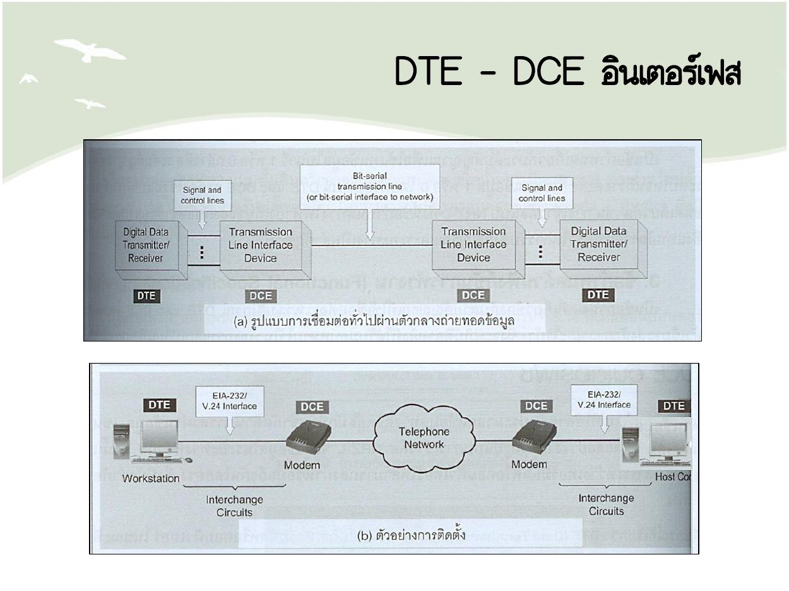
คลิกภาพเพื่อเปิดขยาย
อ่านข้อความต้นฉบับที่สกัดได้ (ไทย/อังกฤษตามไฟล์) DTE – DCE อินเตอร์เฟส ทบทวนภาษาไทย: การส่งข้อมูลดิจิทัลและการแปลงสัญญาณ เสริม Network บท 5: Interface, RS-232, USB และ FireWire
กลับสารบัญ ↑ หน้า 27 — DTE – DCE อินเตอร์เฟส ดูภาพต้นฉบับหน้า 27 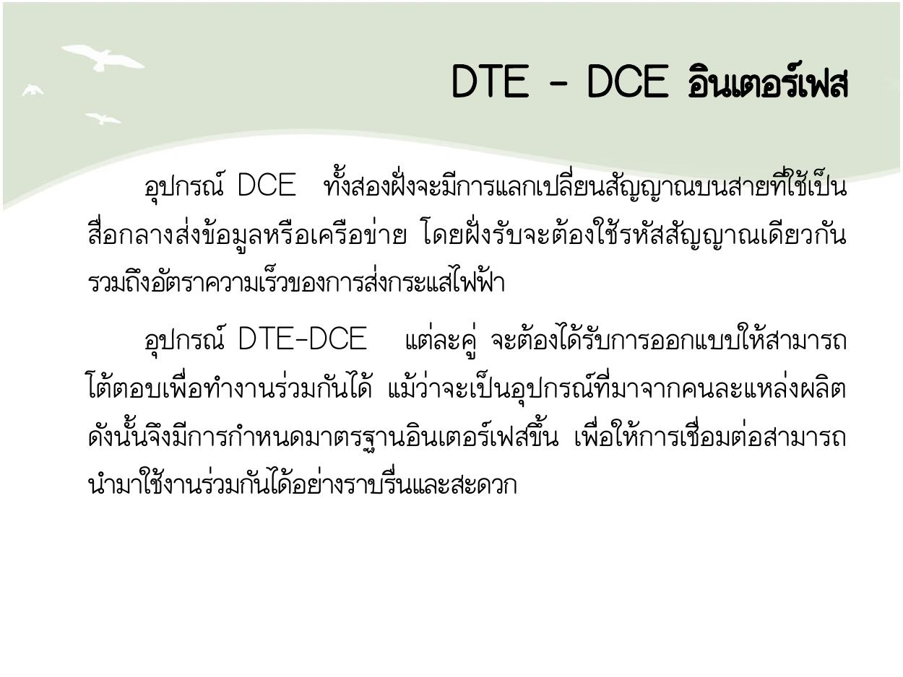
คลิกภาพเพื่อเปิดขยาย
อ่านข้อความต้นฉบับที่สกัดได้ (ไทย/อังกฤษตามไฟล์) DTE – DCE อินเตอร์เฟส
อุปกรณ์ DCE ทั้งสองฝั่งจะมีการแลกเปลี่ยนสัญญาณบนสายที่ใช้เป็น
สื่อ กลางส่ ง ข้อ มู ล หรื อ เครื อ ข่ า ย โดยฝั่ ง รั บ จะต้ องใช้ ร หั ส สั ญญาณเดี ย วกั น
รวมถึงอัตราความเร็วของการส่งกระแสไฟฟ้า
อุปกรณ์ DTE-DCE แต่ละคู่ จะต้องได้รับการออกแบบให้สามารถ
โต้ต อบเพื่อทางานร่ วมกันได้ แม้ว่าจะเป็นอุปกรณ์ที่มาจากคนละแหล่ง ผลิต
ดังนั้นจึงมีการกาหนดมาตรฐานอินเตอร์เฟสขึ้น เพื่อให้การเชื่อมต่อสามารถ
นามาใช้งานร่วมกันได้อย่างราบรื่นและสะดวก ทบทวนภาษาไทย: การส่งข้อมูลดิจิทัลและการแปลงสัญญาณ เสริม Network บท 5: Interface, RS-232, USB และ FireWire
กลับสารบัญ ↑ หน้า 28 — ข้อกาหนดสาคัญของมาตรฐานอินเตอร์เฟส ดูภาพต้นฉบับหน้า 28 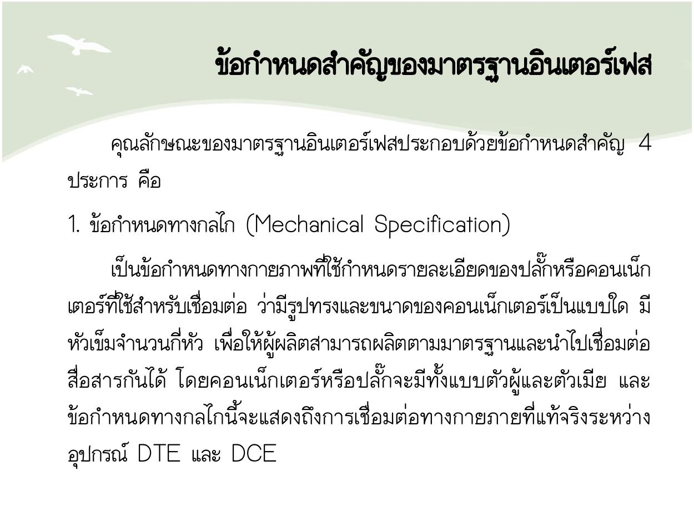
คลิกภาพเพื่อเปิดขยาย
อ่านข้อความต้นฉบับที่สกัดได้ (ไทย/อังกฤษตามไฟล์) ข้อกาหนดสาคัญของมาตรฐานอินเตอร์เฟส
คุณลักษณะของมาตรฐานอินเตอร์เฟสประกอบด้วยข้อกาหนดสาคัญ 4
ประการ คือ
1. ข้อกาหนดทางกลไก (Mechanical Specification)
เป็นข้อกาหนดทางกายภาพที่ใช้กาหนดรายละเอียดของปลั๊กหรือคอนเน็ก
เตอร์ที่ใช้สาหรับเชื่อมต่อ ว่ามีรูปทรงและขนาดของคอนเน็กเตอร์เป็นแบบใด มี
หัวเข็มจานวนกี่หัว เพื่อให้ผู้ผลิตสามารถผลิตตามมาตรฐานและนาไปเชื่อมต่อ
สื่อสารกันได้ โดยคอนเน็ก เตอร์ ห รื อ ปลั๊กจะมีทั้ ง แบบตั วผู้แ ละตั วเมีย และ
ข้อกาหนดทางกลไกนี้จ ะแสดงถึ ง การเชื่ อมต่ อทางกายภายที่แท้จ ริง ระหว่าง
อุปกรณ์ DTE และ DCE ทบทวนภาษาไทย: การส่งข้อมูลดิจิทัลและการแปลงสัญญาณ เสริม Network บท 5: Interface, RS-232, USB และ FireWire
กลับสารบัญ ↑ หน้า 29 — ข้อกาหนดสาคัญของมาตรฐานอินเตอร์เฟส ดูภาพต้นฉบับหน้า 29 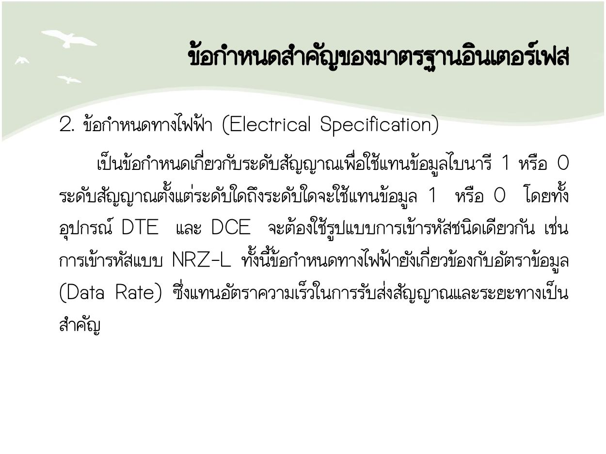
คลิกภาพเพื่อเปิดขยาย
อ่านข้อความต้นฉบับที่สกัดได้ (ไทย/อังกฤษตามไฟล์) ข้อกาหนดสาคัญของมาตรฐานอินเตอร์เฟส
2. ข้อกาหนดทางไฟฟ้า (Electrical Specification)
เป็นข้อกาหนดเกี่ยวกับระดับสัญญาณเพื่อใช้แทนข้อมูลไบนารี 1 หรือ 0
ระดับสัญญาณตั้งแต่ระดับใดถึงระดับใดจะใช้แทนข้อมูล 1 หรือ 0 โดยทั้ง
อุปกรณ์ DTE และ DCE จะต้องใช้รูปแบบการเข้ารหัสชนิดเดียวกัน เช่น
การเข้ารหัสแบบ NRZ-L ทั้งนี้ข้อกาหนดทางไฟฟ้ายังเกี่ยวข้องกับอัตราข้อมูล
(Data Rate) ซึ่งแทนอัตราความเร็วในการรับส่งสัญญาณและระยะทางเป็น
สาคัญ ทบทวนภาษาไทย: การส่งข้อมูลดิจิทัลและการแปลงสัญญาณ เสริม Network บท 5: Interface, RS-232, USB และ FireWire
กลับสารบัญ ↑ หน้า 30 — ข้อกาหนดสาคัญของมาตรฐานอินเตอร์เฟส ดูภาพต้นฉบับหน้า 30 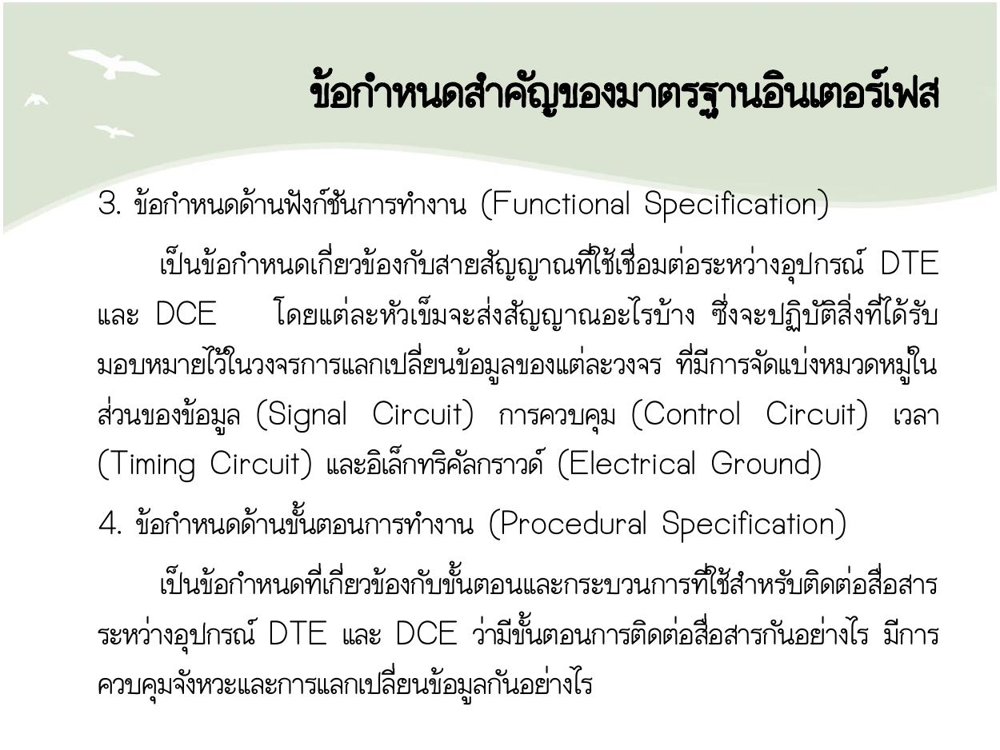
คลิกภาพเพื่อเปิดขยาย
อ่านข้อความต้นฉบับที่สกัดได้ (ไทย/อังกฤษตามไฟล์) ข้อกาหนดสาคัญของมาตรฐานอินเตอร์เฟส
3. ข้อกาหนดด้านฟังก์ชันการทางาน (Functional Specification)
เป็นข้อกาหนดเกี่ยวข้องกับสายสัญญาณที่ใช้เชื่อมต่อระหว่างอุปกรณ์ DTE
และ DCE โดยแต่ ละหัวเข็มจะส่ง สัญญาณอะไรบ้าง ซึ่งจะปฏิบัติสิ่งที่ได้รับ
มอบหมายไว้ในวงจรการแลกเปลี่ยนข้อมูลของแต่ละวงจร ที่มีการจัดแบ่งหมวดหมู่ใน
ส่วนของข้อมูล (Signal Circuit) การควบคุม (Control Circuit) เวลา
(Timing Circuit) และอิเล็กทริคัลกราวด์ (Electrical Ground)
4. ข้อกาหนดด้านขั้นตอนการทางาน (Procedural Specification)
เป็นข้อกาหนดที่เกี่ยวข้องกับขั้นตอนและกระบวนการที่ใช้สาหรับติดต่อสื่อสาร
ระหว่างอุปกรณ์ DTE และ DCE ว่ามีขั้นตอนการติดต่อสื่อสารกันอย่างไร มีการ
ควบคุมจังหวะและการแลกเปลี่ยนข้อมูลกันอย่างไร ทบทวนภาษาไทย: การส่งข้อมูลดิจิทัลและการแปลงสัญญาณ เสริม Network บท 5: Interface, RS-232, USB และ FireWire
กลับสารบัญ ↑ หน้า 31 — อินเตอร์เฟส EIA-232 หรือ RS-232 ดูภาพต้นฉบับหน้า 31 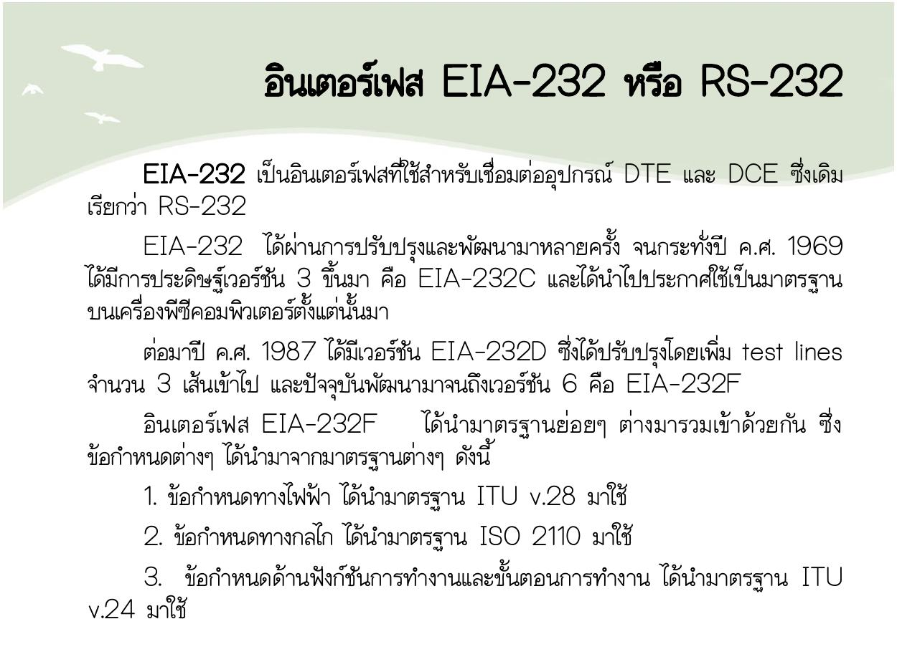
คลิกภาพเพื่อเปิดขยาย
อ่านข้อความต้นฉบับที่สกัดได้ (ไทย/อังกฤษตามไฟล์) อินเตอร์เฟส EIA-232 หรือ RS-232
EIA-232 เป็นอินเตอร์เฟสที่ใช้สาหรับเชื่อมต่ออุปกรณ์ DTE และ DCE ซึ่งเดิม
เรียกว่า RS-232
EIA-232 ได้ผ่านการปรับปรุงและพัฒนามาหลายครั้ง จนกระทั่งปี ค.ศ. 1969
ได้มีการประดิษฐ์เวอร์ชัน 3 ขึ้นมา คือ EIA-232C และได้นาไปประกาศใช้เป็นมาตรฐาน
บนเครื่องพีซีคอมพิวเตอร์ตั้งแต่นั้นมา
ต่อมาปี ค.ศ. 1987 ได้มีเวอร์ชัน EIA-232D ซึ่งได้ปรับปรุงโดยเพิ่ม test lines
จานวน 3 เส้นเข้าไป และปัจจุบันพัฒนามาจนถึงเวอร์ชัน 6 คือ EIA-232F
อินเตอร์เฟส EIA-232F ได้นามาตรฐานย่อยๆ ต่างมารวมเข้าด้วยกัน ซึ่ ง
ข้อกาหนดต่างๆ ได้นามาจากมาตรฐานต่างๆ ดังนี้
1. ข้อกาหนดทางไฟฟ้า ได้นามาตรฐาน ITU v.28 มาใช้
2. ข้อกาหนดทางกลไก ได้นามาตรฐาน ISO 2110 มาใช้
3. ข้อกาหนดด้านฟังก์ชันการทางานและขั้นตอนการทางาน ได้นามาตรฐาน ITU
v.24 มาใช้ ทบทวนภาษาไทย: การส่งข้อมูลดิจิทัลและการแปลงสัญญาณ เสริม Network บท 5: Interface, RS-232, USB และ FireWire
กลับสารบัญ ↑ หน้า 32 — คุณลักษณะของอินเตอร์เฟส EIA-232/RS-232 ดูภาพต้นฉบับหน้า 32 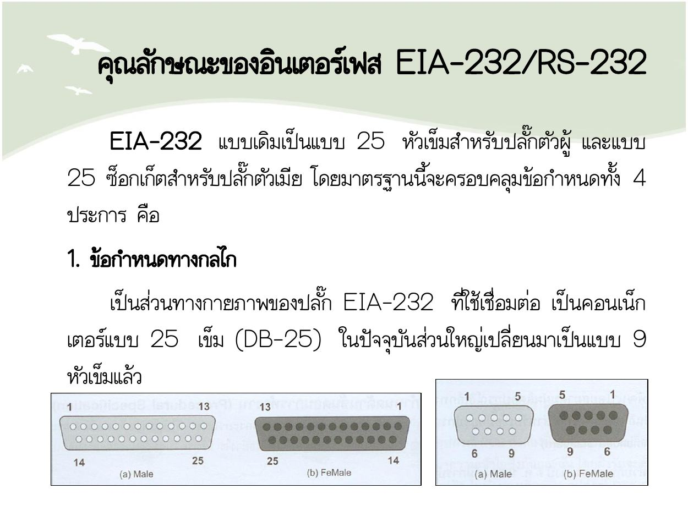
คลิกภาพเพื่อเปิดขยาย
อ่านข้อความต้นฉบับที่สกัดได้ (ไทย/อังกฤษตามไฟล์) คุณลักษณะของอินเตอร์เฟส EIA-232/RS-232
EIA-232 แบบเดิมเป็นแบบ 25 หัวเข็มสาหรับปลั๊กตัวผู้ และแบบ
25 ซ็อกเก็ตสาหรับปลั๊กตัวเมีย โดยมาตรฐานนี้จะครอบคลุมข้อกาหนดทั้ง 4
ประการ คือ
1. ข้อกาหนดทางกลไก
เป็นส่วนทางกายภาพของปลั๊ก EIA-232 ที่ใช้เชื่อมต่อ เป็นคอนเน็ก
เตอร์แบบ 25 เข็ม (DB-25) ในปัจจุบันส่วนใหญ่เปลี่ยนมาเป็นแบบ 9
หัวเข็มแล้ว ทบทวนภาษาไทย: การส่งข้อมูลดิจิทัลและการแปลงสัญญาณ เสริม Network บท 5: Interface, RS-232, USB และ FireWire
กลับสารบัญ ↑ หน้า 33 — อินเตอร์เฟส EIA-232 หรือ RS-232 ดูภาพต้นฉบับหน้า 33 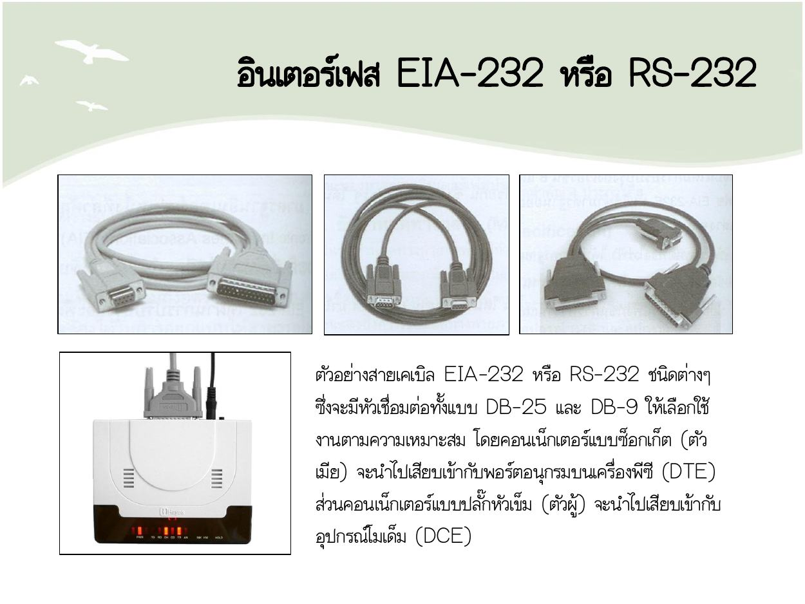
คลิกภาพเพื่อเปิดขยาย
อ่านข้อความต้นฉบับที่สกัดได้ (ไทย/อังกฤษตามไฟล์) อินเตอร์เฟส EIA-232 หรือ RS-232
ตัวอย่างสายเคเบิล EIA-232 หรือ RS-232 ชนิดต่างๆ
ซึ่งจะมีหัวเชื่อมต่อทั้งแบบ DB-25 และ DB-9 ให้เลือกใช้
งานตามความเหมาะสม โดยคอนเน็กเตอร์แบบซ็อกเก็ต (ตัว
เมีย) จะนาไปเสียบเข้ากับพอร์ตอนุกรมบนเครื่องพีซี (DTE)
ส่วนคอนเน็กเตอร์แบบปลั๊กหัวเข็ม (ตัวผู้) จะนาไปเสียบเข้ากับ
อุปกรณ์โมเด็ม (DCE) ทบทวนภาษาไทย: การส่งข้อมูลดิจิทัลและการแปลงสัญญาณ เสริม Network บท 5: Interface, RS-232, USB และ FireWire
กลับสารบัญ ↑ หน้า 34 — คุณลักษณะของอินเตอร์เฟส EIA-232/RS-232 ดูภาพต้นฉบับหน้า 34 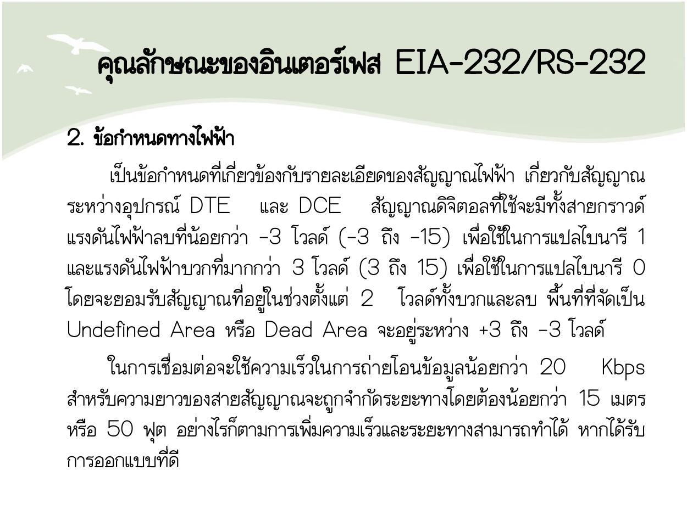
คลิกภาพเพื่อเปิดขยาย
อ่านข้อความต้นฉบับที่สกัดได้ (ไทย/อังกฤษตามไฟล์) คุณลักษณะของอินเตอร์เฟส EIA-232/RS-232
2. ข้อกาหนดทางไฟฟ้า
เป็นข้อกาหนดที่เกี่ยวข้องกับรายละเอียดของสัญญาณไฟฟ้า เกี่ยวกับสัญญาณ
ระหว่างอุปกรณ์ DTE และ DCE สัญญาณดิจิตอลที่ใช้จะมีทั้งสายกราวด์
แรงดันไฟฟ้าลบที่น้อยกว่า -3 โวลด์ (-3 ถึง -15) เพื่อใช้ในการแปลไบนารี 1
และแรงดันไฟฟ้าบวกที่มากกว่า 3 โวลด์ (3 ถึง 15) เพื่อใช้ในการแปลไบนารี 0
โดยจะยอมรับสัญญาณที่อยู่ในช่วงตั้งแต่ 2 โวลด์ทั้งบวกและลบ พื้นที่ที่จัดเป็น
Undefined Area หรือ Dead Area จะอยู่ระหว่าง +3 ถึง -3 โวลด์
ในการเชื่อมต่อจะใช้ความเร็วในการถ่ายโอนข้อมูลน้อยกว่า 20 Kbps
สาหรับความยาวของสายสัญญาณจะถูกจากัดระยะทางโดยต้องน้อยกว่า 15 เมตร
หรือ 50 ฟุต อย่างไรก็ตามการเพิ่มความเร็วและระยะทางสามารถทาได้ หากได้รับ
การออกแบบที่ดี ทบทวนภาษาไทย: การส่งข้อมูลดิจิทัลและการแปลงสัญญาณ เสริม Network บท 5: Interface, RS-232, USB และ FireWire
กลับสารบัญ ↑ หน้า 35 — คุณลักษณะของอินเตอร์เฟส EIA-232/RS-232 ดูภาพต้นฉบับหน้า 35 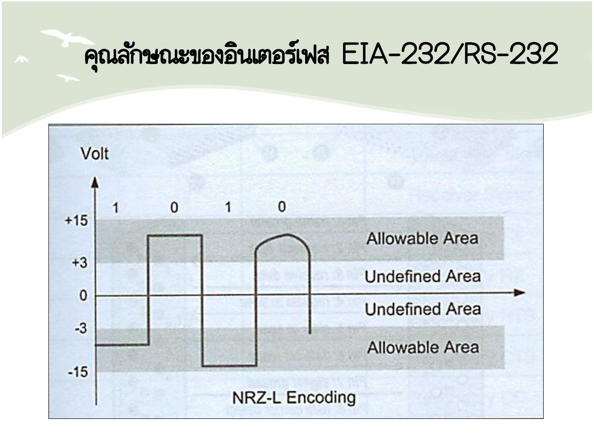
คลิกภาพเพื่อเปิดขยาย
อ่านข้อความต้นฉบับที่สกัดได้ (ไทย/อังกฤษตามไฟล์) คุณลักษณะของอินเตอร์เฟส EIA-232/RS-232 ทบทวนภาษาไทย: การส่งข้อมูลดิจิทัลและการแปลงสัญญาณ เสริม Network บท 5: Interface, RS-232, USB และ FireWire
กลับสารบัญ ↑ หน้า 36 — คุณลักษณะของอินเตอร์เฟส EIA-232/RS-232 ดูภาพต้นฉบับหน้า 36 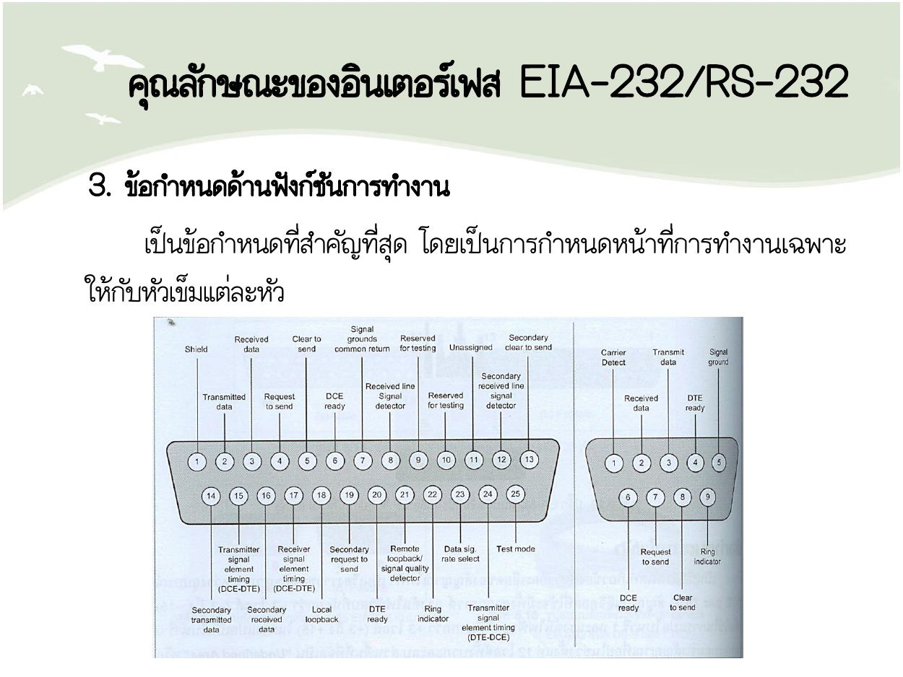
คลิกภาพเพื่อเปิดขยาย
อ่านข้อความต้นฉบับที่สกัดได้ (ไทย/อังกฤษตามไฟล์) คุณลักษณะของอินเตอร์เฟส EIA-232/RS-232
3. ข้อกาหนดด้านฟังก์ชันการทางาน
เป็นข้อกาหนดที่สาคัญที่สุด โดยเป็นการกาหนดหน้าที่การทางานเฉพาะ
ให้กับหัวเข็มแต่ละหัว ทบทวนภาษาไทย: การส่งข้อมูลดิจิทัลและการแปลงสัญญาณ เสริม Network บท 5: Interface, RS-232, USB และ FireWire
กลับสารบัญ ↑ หน้า 37 — คุณลักษณะของอินเตอร์เฟส EIA-232/RS-232 ดูภาพต้นฉบับหน้า 37 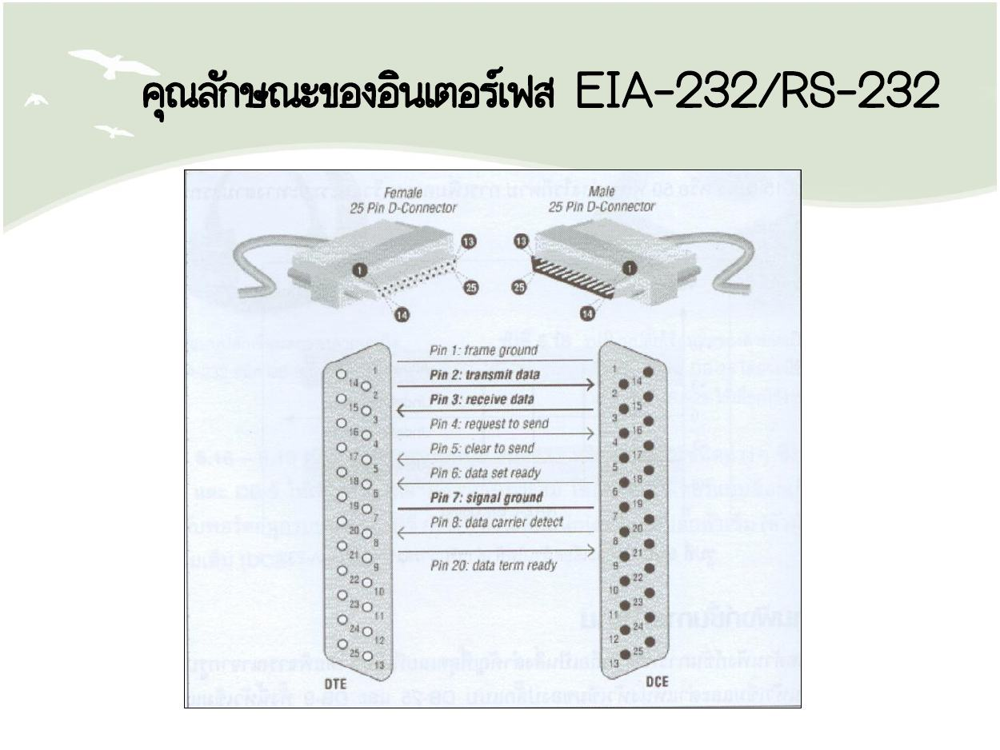
คลิกภาพเพื่อเปิดขยาย
อ่านข้อความต้นฉบับที่สกัดได้ (ไทย/อังกฤษตามไฟล์) คุณลักษณะของอินเตอร์เฟส EIA-232/RS-232 ทบทวนภาษาไทย: การส่งข้อมูลดิจิทัลและการแปลงสัญญาณ เสริม Network บท 5: Interface, RS-232, USB และ FireWire
กลับสารบัญ ↑ หน้า 38 — คุณลักษณะของอินเตอร์เฟส EIA-232/RS-232 ดูภาพต้นฉบับหน้า 38 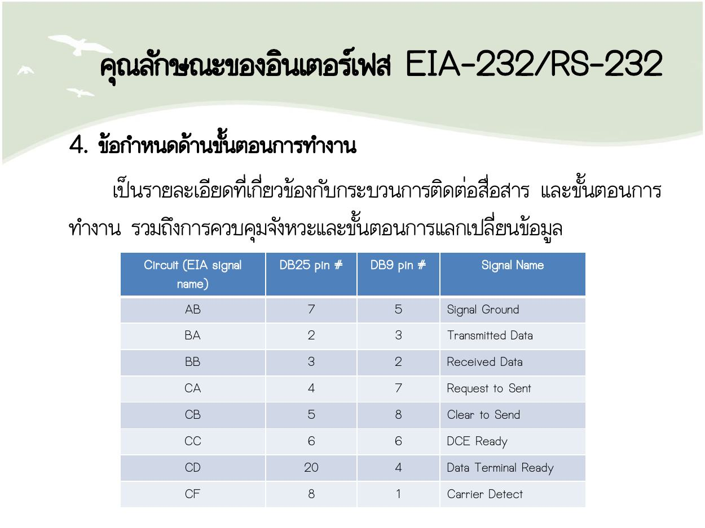
คลิกภาพเพื่อเปิดขยาย
อ่านข้อความต้นฉบับที่สกัดได้ (ไทย/อังกฤษตามไฟล์) คุณลักษณะของอินเตอร์เฟส EIA-232/RS-232
4. ข้อกาหนดด้านขั้นตอนการทางาน
เป็นรายละเอียดที่เกี่ยวข้องกับกระบวนการติดต่อสื่อสาร และขั้นตอนการ
ทางาน รวมถึงการควบคุมจังหวะและขั้นตอนการแลกเปลี่ยนข้อมูล
Circuit (EIA signal DB25 pin # DB9 pin # Signal Name
name)
AB 7 5 Signal Ground
BA 2 3 Transmitted Data
BB 3 2 Received Data
CA 4 7 Request to Sent
CB 5 8 Clear to Send
CC 6 6 DCE Ready
CD 20 4 Data Terminal Ready
CF 8 1 Carrier Detect ทบทวนภาษาไทย: การส่งข้อมูลดิจิทัลและการแปลงสัญญาณ เสริม Network บท 5: Interface, RS-232, USB และ FireWire
กลับสารบัญ ↑ หน้า 39 — คุณลักษณะของอินเตอร์เฟส EIA-232/RS-232 ดูภาพต้นฉบับหน้า 39 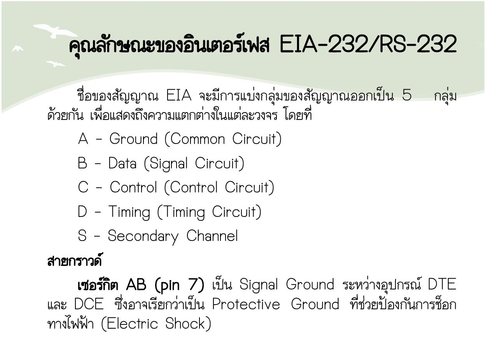
คลิกภาพเพื่อเปิดขยาย
อ่านข้อความต้นฉบับที่สกัดได้ (ไทย/อังกฤษตามไฟล์) คุณลักษณะของอินเตอร์เฟส EIA-232/RS-232
ชื่อของสัญญาณ EIA จะมีการแบ่งกลุ่มของสัญญาณออกเป็น 5 กลุ่ม
ด้วยกัน เพื่อแสดงถึงความแตกต่างในแต่ละวงจร โดยที่
A – Ground (Common Circuit)
B – Data (Signal Circuit)
C – Control (Control Circuit)
D – Timing (Timing Circuit)
S – Secondary Channel
สายกราวด์
เซอร์กิต AB (pin 7) เป็น Signal Ground ระหว่างอุปกรณ์ DTE
และ DCE ซึ่งอาจเรียกว่าเป็น Protective Ground ที่ช่วยป้องกันการช็อก
ทางไฟฟ้า (Electric Shock) ทบทวนภาษาไทย: การส่งข้อมูลดิจิทัลและการแปลงสัญญาณ เสริม Network บท 5: Interface, RS-232, USB และ FireWire
กลับสารบัญ ↑ หน้า 40 — คุณลักษณะของอินเตอร์เฟส EIA-232/RS-232 ดูภาพต้นฉบับหน้า 40 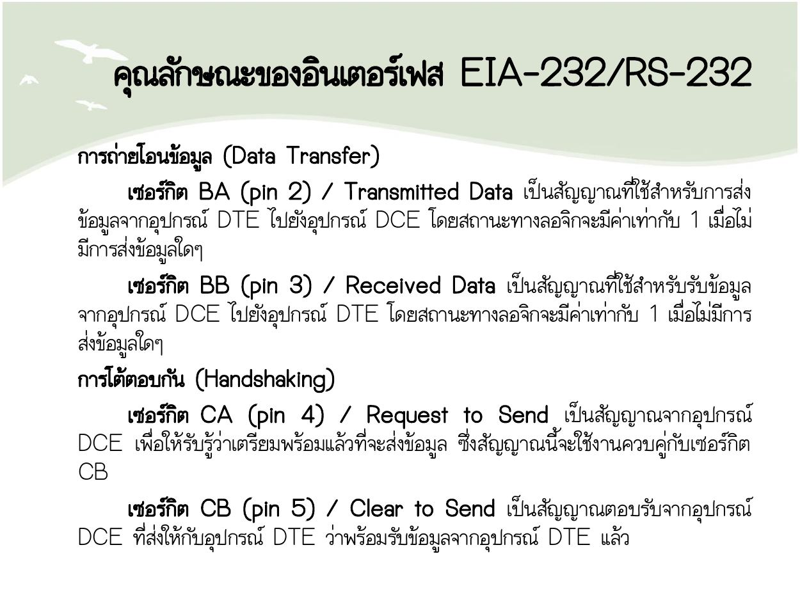
คลิกภาพเพื่อเปิดขยาย
อ่านข้อความต้นฉบับที่สกัดได้ (ไทย/อังกฤษตามไฟล์) คุณลักษณะของอินเตอร์เฟส EIA-232/RS-232
การถ่ายโอนข้อมูล (Data Transfer)
เซอร์กิต BA (pin 2) / Transmitted Data เป็นสัญญาณที่ใช้สาหรับการส่ง
ข้อมูลจากอุปกรณ์ DTE ไปยังอุปกรณ์ DCE โดยสถานะทางลอจิกจะมีค่าเท่ากับ 1 เมื่อไม่
มีการส่งข้อมูลใดๆ
เซอร์กิต BB (pin 3) / Received Data เป็นสัญญาณที่ใช้สาหรับรับข้อมูล
จากอุปกรณ์ DCE ไปยังอุปกรณ์ DTE โดยสถานะทางลอจิกจะมีค่าเท่ากับ 1 เมื่อไม่มีการ
ส่งข้อมูลใดๆ
การโต้ตอบกัน (Handshaking)
เซอร์กิต CA (pin 4) / Request to Send เป็นสัญญาณจากอุปกรณ์
DCE เพื่อให้รับรู้ว่าเตรียมพร้อมแล้วที่จะส่งข้อมูล ซึ่งสัญญาณนี้จะใช้งานควบคู่กับเซอร์กิต
CB
เซอร์กิต CB (pin 5) / Clear to Send เป็นสัญญาณตอบรับจากอุปกรณ์
DCE ที่ส่งให้กับอุปกรณ์ DTE ว่าพร้อมรับข้อมูลจากอุปกรณ์ DTE แล้ว ทบทวนภาษาไทย: การส่งข้อมูลดิจิทัลและการแปลงสัญญาณ เสริม Network บท 5: Interface, RS-232, USB และ FireWire
กลับสารบัญ ↑ หน้า 41 — คุณลักษณะของอินเตอร์เฟส EIA-232/RS-232 ดูภาพต้นฉบับหน้า 41 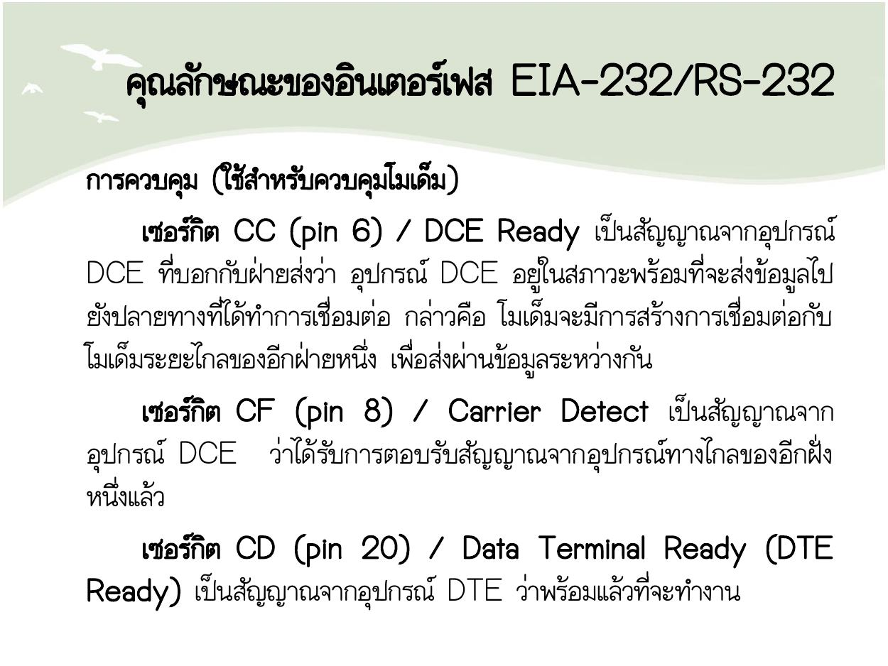
คลิกภาพเพื่อเปิดขยาย
อ่านข้อความต้นฉบับที่สกัดได้ (ไทย/อังกฤษตามไฟล์) คุณลักษณะของอินเตอร์เฟส EIA-232/RS-232
การควบคุม (ใช้สาหรับควบคุมโมเด็ม)
เซอร์กิต CC (pin 6) / DCE Ready เป็นสัญญาณจากอุปกรณ์
DCE ที่บอกกับฝ่ายส่งว่า อุปกรณ์ DCE อยู่ในสภาวะพร้อมที่จะส่งข้อมูลไป
ยังปลายทางที่ได้ทาการเชื่อมต่อ กล่าวคือ โมเด็มจะมีการสร้างการเชื่อมต่อกับ
โมเด็มระยะไกลของอีกฝ่ายหนึ่ง เพื่อส่งผ่านข้อมูลระหว่างกัน
เซอร์กิต CF (pin 8) / Carrier Detect เป็นสัญญาณจาก
อุปกรณ์ DCE ว่าได้รับการตอบรับสัญญาณจากอุปกรณ์ทางไกลของอีกฝั่ง
หนึ่งแล้ว
เซอร์กิต CD (pin 20) / Data Terminal Ready (DTE
Ready) เป็นสัญญาณจากอุปกรณ์ DTE ว่าพร้อมแล้วที่จะทางาน ทบทวนภาษาไทย: การส่งข้อมูลดิจิทัลและการแปลงสัญญาณ เสริม Network บท 5: Interface, RS-232, USB และ FireWire
กลับสารบัญ ↑ หน้า 42 — นัลโมเด็ม (Null Modem) ดูภาพต้นฉบับหน้า 42 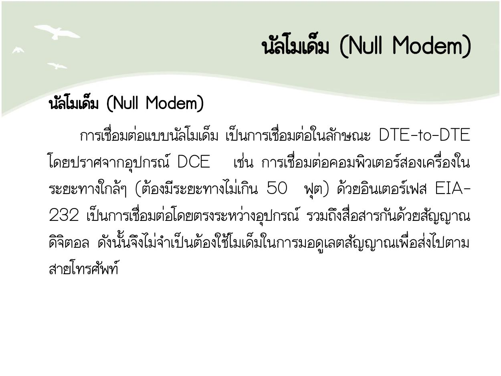
คลิกภาพเพื่อเปิดขยาย
อ่านข้อความต้นฉบับที่สกัดได้ (ไทย/อังกฤษตามไฟล์) นัลโมเด็ม (Null Modem)
นัลโมเด็ม (Null Modem)
การเชื่อมต่อแบบนัลโมเด็ม เป็นการเชื่อมต่อในลักษณะ DTE-to-DTE
โดยปราศจากอุปกรณ์ DCE เช่น การเชื่อมต่อคอมพิวเตอร์สองเครื่องใน
ระยะทางใกล้ๆ (ต้องมีระยะทางไม่เกิน 50 ฟุต) ด้วยอินเตอร์เฟส EIA-
232 เป็นการเชื่อมต่อโดยตรงระหว่างอุปกรณ์ รวมถึงสื่อสารกันด้วยสัญญาณ
ดิจิตอล ดังนั้นจึงไม่จาเป็นต้องใช้โมเด็มในการมอดูเลตสัญญาณเพื่อส่งไปตาม
สายโทรศัพท์ ทบทวนภาษาไทย: การส่งข้อมูลดิจิทัลและการแปลงสัญญาณ เสริม Network บท 5: Interface, RS-232, USB และ FireWire
กลับสารบัญ ↑ หน้า 43 — นัลโมเด็ม (Null Modem) ดูภาพต้นฉบับหน้า 43 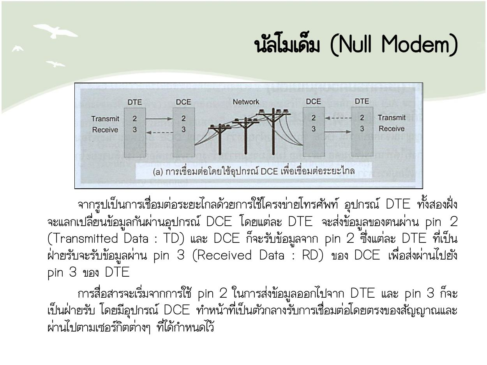
คลิกภาพเพื่อเปิดขยาย
อ่านข้อความต้นฉบับที่สกัดได้ (ไทย/อังกฤษตามไฟล์) นัลโมเด็ม (Null Modem)
จากรูปเป็นการเชื่อมต่อระยะไกลด้วยการใช้โครงข่ายโทรศัพท์ อุปกรณ์ DTE ทั้งสองฝั่ง
จะแลกเปลี่ยนข้อมูลกันผ่านอุปกรณ์ DCE โดยแต่ละ DTE จะส่งข้อมูลของตนผ่าน pin 2
(Transmitted Data : TD) และ DCE ก็จะรับข้อมูลจาก pin 2 ซึ่งแต่ละ DTE ที่เป็น
ฝ่ายรับจะรับข้อมูลผ่าน pin 3 (Received Data : RD) ของ DCE เพื่อส่งผ่านไปยัง
pin 3 ของ DTE
การสื่อสารจะเริ่มจากการใช้ pin 2 ในการส่งข้อมูลออกไปจาก DTE และ pin 3 ก็จะ
เป็นฝ่ายรับ โดยมีอุปกรณ์ DCE ทาหน้าที่เป็นตัวกลางรับการเชื่อมต่อโดยตรงของสัญญาณและ
ผ่านไปตามเซอร์กิตต่างๆ ที่ได้กาหนดไว้ ทบทวนภาษาไทย: การส่งข้อมูลดิจิทัลและการแปลงสัญญาณ เสริม Network บท 5: Interface, RS-232, USB และ FireWire
กลับสารบัญ ↑ หน้า 44 — นัลโมเด็ม (Null Modem) ดูภาพต้นฉบับหน้า 44 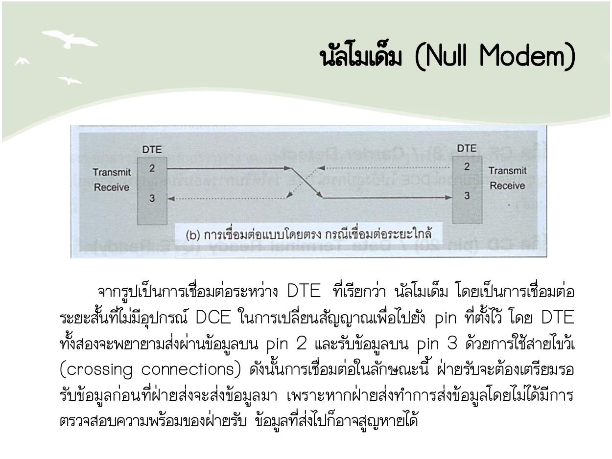
คลิกภาพเพื่อเปิดขยาย
อ่านข้อความต้นฉบับที่สกัดได้ (ไทย/อังกฤษตามไฟล์) นัลโมเด็ม (Null Modem)
จากรูปเป็นการเชื่อมต่อระหว่าง DTE ที่เรียกว่า นัลโมเด็ม โดยเป็นการเชื่อมต่อ
ระยะสั้นที่ไม่มีอุปกรณ์ DCE ในการเปลี่ยนสัญญาณเพื่อไปยัง pin ที่ตั้งไว้ โดย DTE
ทั้งสองจะพยายามส่งผ่านข้อมูลบน pin 2 และรับข้อมูลบน pin 3 ด้วยการใช้สายไขว้เ
(crossing connections) ดังนั้นการเชื่อมต่อในลักษณะนี้ ฝ่ายรับจะต้องเตรียมรอ
รับข้อมูลก่อนที่ฝ่ายส่งจะส่งข้อมูลมา เพราะหากฝ่ายส่งทาการส่งข้อมูลโดยไม่ได้มีการ
ตรวจสอบความพร้อมของฝ่ายรับ ข้อมูลที่ส่งไปก็อาจสูญหายได้ ทบทวนภาษาไทย: การส่งข้อมูลดิจิทัลและการแปลงสัญญาณ เสริม Network บท 5: Interface, RS-232, USB และ FireWire
กลับสารบัญ ↑ หน้า 45 — นัลโมเด็ม (Null Modem) ดูภาพต้นฉบับหน้า 45 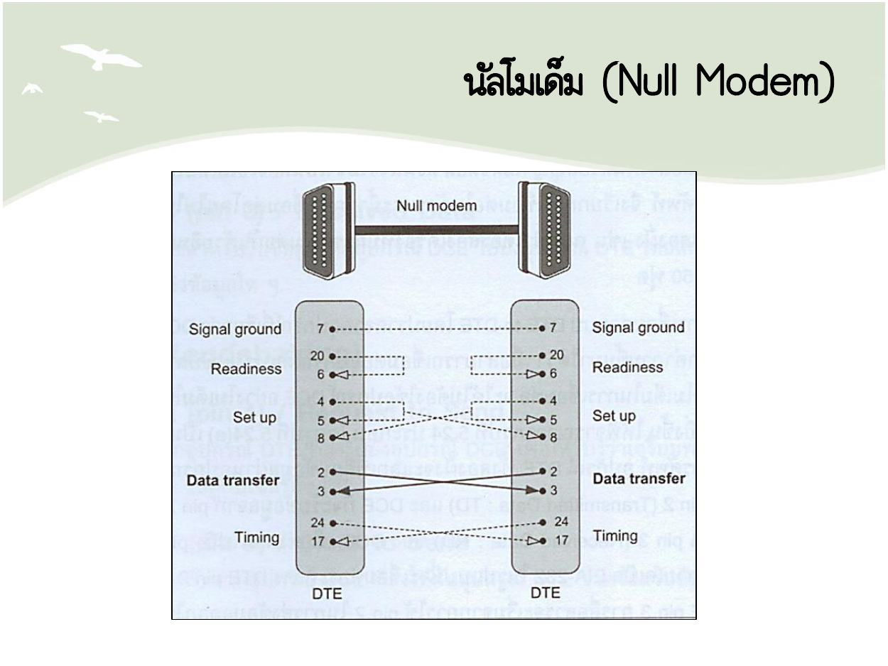
คลิกภาพเพื่อเปิดขยาย
อ่านข้อความต้นฉบับที่สกัดได้ (ไทย/อังกฤษตามไฟล์) นัลโมเด็ม (Null Modem) ทบทวนภาษาไทย: การส่งข้อมูลดิจิทัลและการแปลงสัญญาณ เสริม Network บท 5: Interface, RS-232, USB และ FireWire
กลับสารบัญ ↑ หน้า 46 — นัลโมเด็ม (Null Modem) ดูภาพต้นฉบับหน้า 46 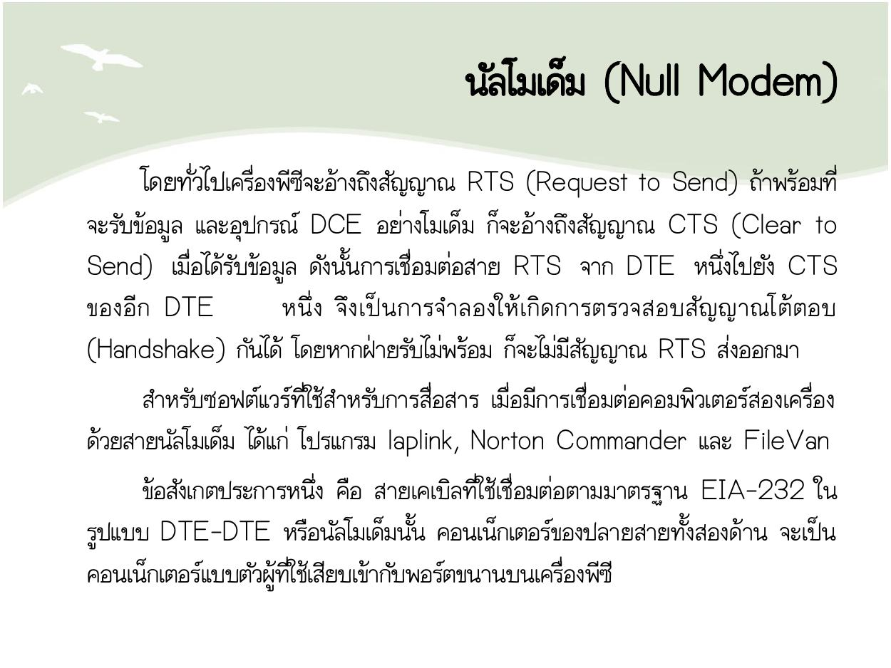
คลิกภาพเพื่อเปิดขยาย
อ่านข้อความต้นฉบับที่สกัดได้ (ไทย/อังกฤษตามไฟล์) นัลโมเด็ม (Null Modem)
โดยทั่วไปเครื่องพีซีจะอ้างถึงสัญญาณ RTS (Request to Send) ถ้าพร้อมที่
จะรับข้อมูล และอุปกรณ์ DCE อย่างโมเด็ม ก็จะอ้างถึงสัญญาณ CTS (Clear to
Send) เมื่อได้รับข้อมูล ดังนั้นการเชื่อมต่อสาย RTS จาก DTE หนึ่งไปยัง CTS
ของอี ก DTE หนึ่ ง จึ ง เป็ น การจ าลองให้ เ กิ ด การตรวจสอบสั ญ ญาณโต้ ต อบ
(Handshake) กันได้ โดยหากฝ่ายรับไม่พร้อม ก็จะไม่มีสัญญาณ RTS ส่งออกมา
สาหรับซอฟต์แวร์ที่ใช้สาหรับการสื่อสาร เมื่อมีการเชื่อมต่อคอมพิวเตอร์สองเครื่อง
ด้วยสายนัลโมเด็ม ได้แก่ โปรแกรม laplink, Norton Commander และ FileVan
ข้อสังเกตประการหนึ่ง คือ สายเคเบิลที่ใช้เชื่อมต่อตามมาตรฐาน EIA-232 ใน
รูปแบบ DTE-DTE หรือนัลโมเด็มนั้น คอนเน็กเตอร์ของปลายสายทั้งสองด้าน จะเป็น
คอนเน็กเตอร์แบบตัวผู้ที่ใช้เสียบเข้ากับพอร์ตขนานบนเครื่องพีซี ทบทวนภาษาไทย: การส่งข้อมูลดิจิทัลและการแปลงสัญญาณ เสริม Network บท 5: Interface, RS-232, USB และ FireWire
กลับสารบัญ ↑ หน้า 47 — นัลโมเด็ม (Null Modem) ดูภาพต้นฉบับหน้า 47 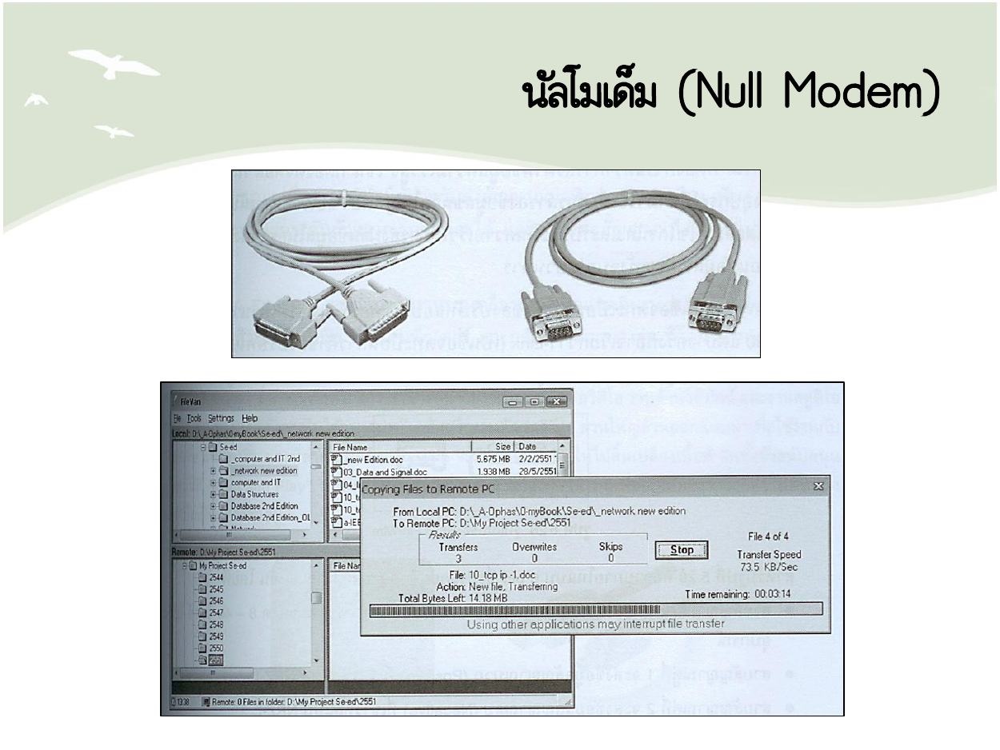
คลิกภาพเพื่อเปิดขยาย
อ่านข้อความต้นฉบับที่สกัดได้ (ไทย/อังกฤษตามไฟล์) นัลโมเด็ม (Null Modem) ทบทวนภาษาไทย: การส่งข้อมูลดิจิทัลและการแปลงสัญญาณ เสริม Network บท 5: Interface, RS-232, USB และ FireWire
กลับสารบัญ ↑ หน้า 48 — อินเตอร์เฟสความเร็วสูง ดูภาพต้นฉบับหน้า 48 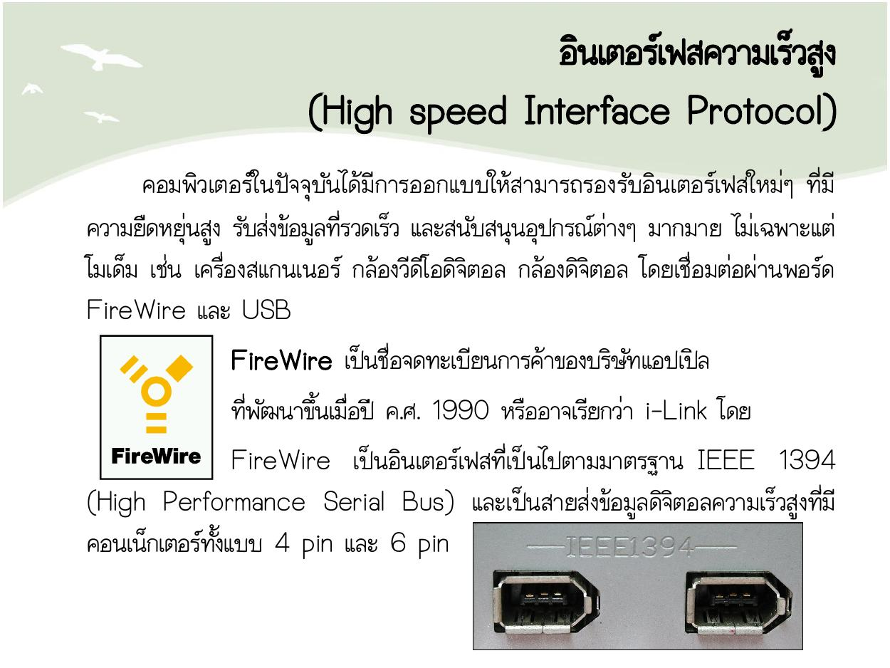
คลิกภาพเพื่อเปิดขยาย
อ่านข้อความต้นฉบับที่สกัดได้ (ไทย/อังกฤษตามไฟล์) อินเตอร์เฟสความเร็วสูง
(High speed Interface Protocol)
คอมพิวเตอร์ในปัจจุบันได้มีการออกแบบให้สามารถรองรับอินเตอร์เฟสใหม่ๆ ที่มี
ความยืดหยุ่นสูง รับส่งข้อมูลที่รวดเร็ว และสนับสนุนอุปกรณ์ต่างๆ มากมาย ไม่เฉพาะแต่
โมเด็ม เช่น เครื่องสแกนเนอร์ กล้องวีดีโอดิจิตอล กล้องดิจิตอล โดยเชื่อมต่อผ่านพอร์ด
FireWire และ USB
FireWire เป็นชื่อจดทะเบียนการค้าของบริษัทแอปเปิล
ที่พัฒนาขึ้นเมื่อปี ค.ศ. 1990 หรืออาจเรียกว่า i-Link โดย
FireWire เป็นอินเตอร์เฟสที่เป็นไปตามมาตรฐาน IEEE 1394
(High Performance Serial Bus) และเป็นสายส่งข้อมูลดิจิตอลความเร็วสูงที่มี
คอนเน็กเตอร์ทั้งแบบ 4 pin และ 6 pin ทบทวนภาษาไทย: การส่งข้อมูลดิจิทัลและการแปลงสัญญาณ เสริม Network บท 5: Interface, RS-232, USB และ FireWire
กลับสารบัญ ↑ หน้า 49 — FireWire ดูภาพต้นฉบับหน้า 49 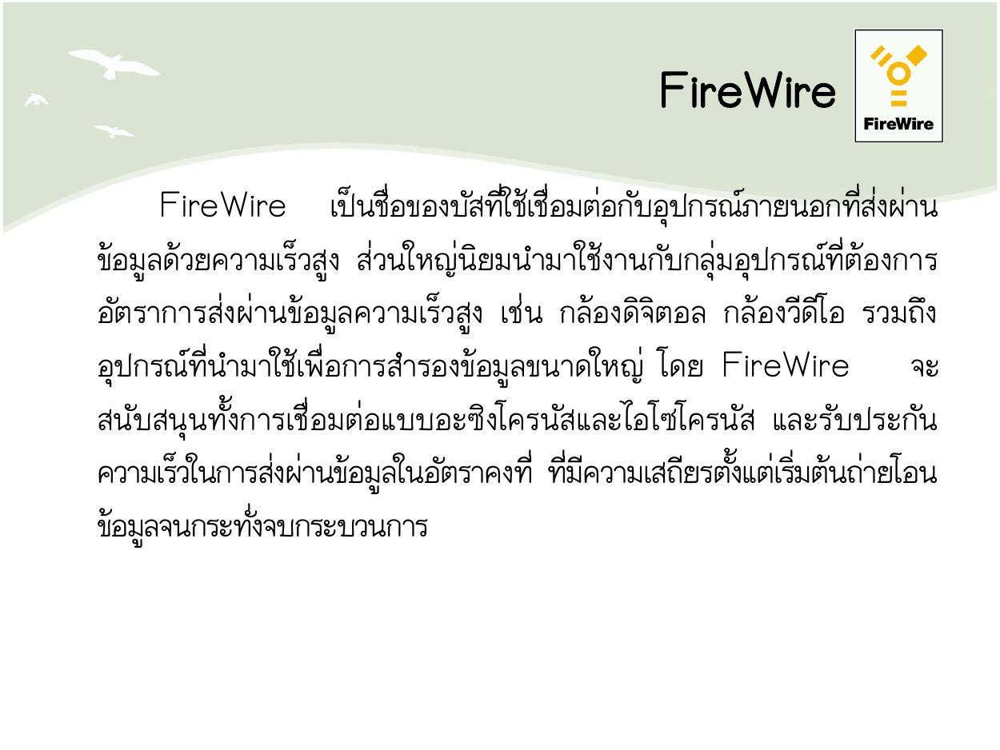
คลิกภาพเพื่อเปิดขยาย
อ่านข้อความต้นฉบับที่สกัดได้ (ไทย/อังกฤษตามไฟล์) FireWire
FireWire เป็นชื่อของบัสที่ใช้เชื่อมต่อกับอุปกรณ์ภายนอกที่ส่งผ่าน
ข้อมูลด้วยความเร็วสูง ส่วนใหญ่นิยมนามาใช้งานกับกลุ่มอุปกรณ์ที่ต้ องการ
อัต ราการส่ง ผ่านข้อมูลความเร็ว สูง เช่ น กล้องดิจิต อล กล้องวีดีโอ รวมถึ ง
อุปกรณ์ที่นามาใช้เพื่อการสารองข้อมูลขนาดใหญ่ โดย FireWire จะ
สนับ สนุน ทั้ง การเชื่อมต่ อ แบบอะซิ ง โครนัส และไอโซโครนั ส และรั บ ประกั น
ความเร็วในการส่งผ่านข้อมูลในอัตราคงที่ ที่มีความเสถียรตั้งแต่เริ่มต้นถ่ายโอน
ข้อมูลจนกระทั่งจบกระบวนการ ทบทวนภาษาไทย: การส่งข้อมูลดิจิทัลและการแปลงสัญญาณ เสริม Network บท 5: Interface, RS-232, USB และ FireWire
กลับสารบัญ ↑ หน้า 50 — FireWire ดูภาพต้นฉบับหน้า 50 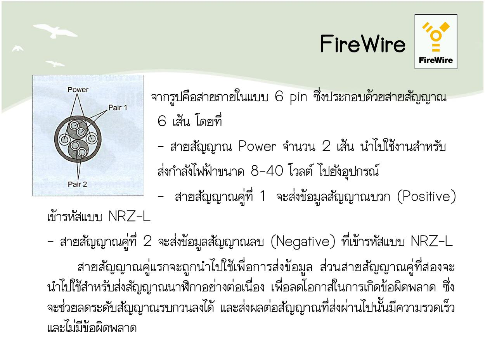
คลิกภาพเพื่อเปิดขยาย
อ่านข้อความต้นฉบับที่สกัดได้ (ไทย/อังกฤษตามไฟล์) FireWire
จากรูปคือสายภายในแบบ 6 pin ซึ่งประกอบด้วยสายสัญญาณ
6 เส้น โดยที่
- สายสัญญาณ Power จานวน 2 เส้น นาไปใช้งานสาหรับ
ส่งกาลังไฟฟ้าขนาด 8-40 โวลต์ ไปยังอุปกรณ์
- สายสัญญาณคู่ที่ 1 จะส่งข้อมูลสัญญาณบวก (Positive)
เข้ารหัสแบบ NRZ-L
- สายสัญญาณคู่ที่ 2 จะส่งข้อมูลสัญญาณลบ (Negative) ที่เข้ารหัสแบบ NRZ-L
สายสัญญาณคู่แรกจะถูกนาไปใช้เพื่อการส่งข้อมูล ส่วนสายสัญญาณคู่ที่สองจะ
นาไปใช้สาหรับส่งสัญญาณนาฬิกาอย่างต่อเนื่อง เพื่อลดโอกาสในการเกิดข้อผิดพลาด ซึ่ง
จะช่วยลดระดับสัญญาณรบกวนลงได้ และส่งผลต่อสัญญาณที่ส่งผ่านไปนั้นมีความรวดเร็ว
และไม่มีข้อผิดพลาด ทบทวนภาษาไทย: การส่งข้อมูลดิจิทัลและการแปลงสัญญาณ เสริม Network บท 5: Interface, RS-232, USB และ FireWire
กลับสารบัญ ↑ หน้า 51 — FireWire ดูภาพต้นฉบับหน้า 51 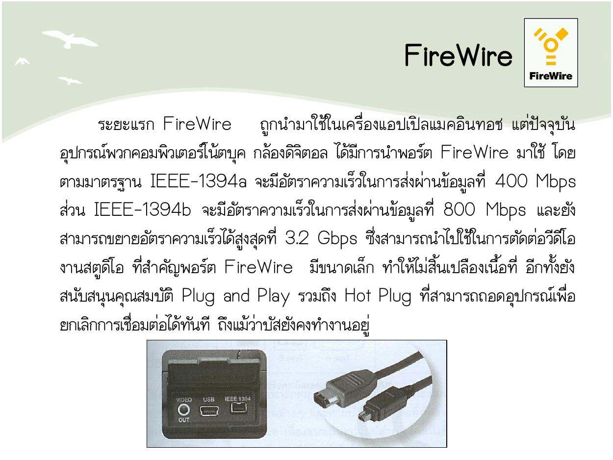
คลิกภาพเพื่อเปิดขยาย
อ่านข้อความต้นฉบับที่สกัดได้ (ไทย/อังกฤษตามไฟล์) FireWire
ระยะแรก FireWire ถูกนามาใช้ในเครื่องแอปเปิลแมคอินทอช แต่ปัจจุบัน
อุปกรณ์พวกคอมพิวเตอร์โน้ตบุค กล้องดิจิตอล ได้มีการนาพอร์ต FireWire มาใช้ โดย
ตามมาตรฐาน IEEE-1394a จะมีอัตราความเร็วในการส่งผ่านข้อมูลที่ 400 Mbps
ส่วน IEEE-1394b จะมีอัตราความเร็วในการส่งผ่านข้อมูลที่ 800 Mbps และยัง
สามารถขยายอัตราความเร็วได้สูงสุดที่ 3.2 Gbps ซึ่งสามารถนาไปใช้ในการตัดต่อวีดีโอ
งานสตูดิโอ ที่สาคัญพอร์ต FireWire มีขนาดเล็ก ทาให้ไม่สิ้นเปลืองเนื้อที่ อีกทั้งยัง
สนับสนุนคุณสมบัติ Plug and Play รวมถึง Hot Plug ที่สามารถถอดอุปกรณ์เพื่อ
ยกเลิกการเชื่อมต่อได้ทันที ถึงแม้ว่าบัสยังคงทางานอยู่ ทบทวนภาษาไทย: การส่งข้อมูลดิจิทัลและการแปลงสัญญาณ เสริม Network บท 5: Interface, RS-232, USB และ FireWire
กลับสารบัญ ↑ หน้า 52 — USB (Universal Serial Bus) ดูภาพต้นฉบับหน้า 52 คลิกภาพเพื่อเปิดขยาย
อ่านข้อความต้นฉบับที่สกัดได้ (ไทย/อังกฤษตามไฟล์) USB (Universal Serial Bus)
USB เป็นมาตรฐานใหม่สาหรับการเชื่อมต่อระหว่างคอมพิวเตอร์กับ
โมเด็ม และอุปกรณ์ต่างๆ ซึ่งปัจจุบันจะเป็นพอร์ต USB ทั้งสิ้น เช่น เมาส์
คีย์บอร์ด โดย USB เป็นอินเตอร์เฟสที่สร้างความสะดวก และความยืดหยุ่น
ต่อผู้ใช้งาน และยังสนับสนุนการทางานแบบ plug and play อีกด้วย
ในส่วนของสาย USB ที่ใช้เชื่อมต่อ จะมีหัวเสียบโฮสต์ (Host End)
และหัวเสียบอุปกรณ์ (Device End) ซึ่งหัวเสียบทั้งสองจะมีรูปแบบคอน
เน็กเตอร์ที่แตกต่างกัน Type Mini Type B Type A ทบทวนภาษาไทย: การส่งข้อมูลดิจิทัลและการแปลงสัญญาณ เสริม Network บท 5: Interface, RS-232, USB และ FireWire
กลับสารบัญ ↑ หน้า 53 — USB (Universal Serial Bus) ดูภาพต้นฉบับหน้า 53 คลิกภาพเพื่อเปิดขยาย
อ่านข้อความต้นฉบับที่สกัดได้ (ไทย/อังกฤษตามไฟล์) USB (Universal Serial Bus)
ข้อเสียของ USB คือ การรับส่งข้อมูลที่มีความเร็วต่า โดย USB เวอร์
ชั่น 1.1 จะมีความเร็วในการถ่ายโอนข้อมูลเพียง 12 Mbps แต่ปัจจุบัน
USB เวอร์ชั่น 2.0 (High Speed USB) ได้พัฒนาความเร็วในการถ่าย
โอนข้อมูลให้สูงขึ้น โดยความเร็วสูงสุดอยู่ที่ 480 Mbps และยังสามารถใช้
งานร่วมกับพอร์ต USB เวอร์ชั่น 1.1 ได้ด้วย
เมื่อเปรียบเทียบกับ FireWire ตามมาตรฐาน 1394a ที่มีความเร็ว
400 Mbps จะเห็นว่า FireWire สามารถทางานด้วยอัตราความเร็ว
เหนือกว่า เนื่องจากซอฟต์แวร์ต่างๆ ที่ใช้งานในปัจจุบันสามารถดึงศักยภาพของ
FireWire ออกมาใช้ได้เต็มประสิทธิภาพมากกว่า ทบทวนภาษาไทย: การส่งข้อมูลดิจิทัลและการแปลงสัญญาณ เสริม Network บท 5: Interface, RS-232, USB และ FireWire
กลับสารบัญ ↑ หน้า 54 — USB (Universal Serial Bus) ดูภาพต้นฉบับหน้า 54 คลิกภาพเพื่อเปิดขยาย
อ่านข้อความต้นฉบับที่สกัดได้ (ไทย/อังกฤษตามไฟล์) USB (Universal Serial Bus)
ภายในสายเคเบิลของ USB จะประกอบด้วยสายสัญญาณจานวน 4 เส้น โดยชื่อ
ที่กากับไว้ในสัญญาณแต่ละเส้นจะมีหน้าที่ดังต่อไปนี้
- GND คือ สายกราวด์
- VBUS คือ สายสัญญาณที่ส่งกาลังไฟฟ้าขนาด 5 โวลด์ไปยังอุปกรณ์
- D+ คือ สายส่งข้อมูลสัญญาณบวก (Positive) ที่มีการเข้ารหัสแบบ NRZ-L
- D- คือ สายส่งข้อมูลสัญญาณลบ (Negative) ที่มีการเข้ารหัสแบบ NRZ-L
พร้อมกับกาหนดระยะวัดของสัญญาณลบเพื่อลดการแทรกแซงของสัญญาณรบกวนและ
ข้อผิดพลาด ทบทวนภาษาไทย: การส่งข้อมูลดิจิทัลและการแปลงสัญญาณ เสริม Network บท 5: Interface, RS-232, USB และ FireWire
กลับสารบัญ ↑